<!doctype html>
<html lang="en">
<head>
  <meta charset="utf-8">
  <meta name="viewport" content="width=device-width, initial-scale=1">
  <title>arxiv digest — 2026-07-29</title>
  <style>
:root {
  --bg: #ffffff;
  --fg: #1f2328;
  --muted: #59636e;
  --border: #d0d7de;
  --card: #f6f8fa;
  --link: #0969da;
}
body {
  max-width: 980px;
  margin: 0 auto;
  padding: 2rem 1rem 5rem;
  font-family: -apple-system, BlinkMacSystemFont, "Segoe UI", Helvetica, Arial, sans-serif;
  line-height: 1.55;
  color: var(--fg);
  background: var(--bg);
}
a { color: var(--link); }
img { max-width: 100%; height: auto; }
pre, code { background: var(--card); border-radius: 6px; }
pre { padding: 1rem; overflow-x: auto; }
blockquote { border-left: 4px solid var(--border); padding-left: 1rem; color: var(--muted); }
details { margin: 0.6rem 0; }
summary { cursor: pointer; font-weight: 600; }
.paper-figures-scroll {
  display: flex;
  gap: 1rem;
  overflow-x: auto;
  overscroll-behavior-x: contain;
  padding: 0.75rem 0.25rem 1rem;
  margin: 1rem 0 1.25rem;
  border-top: 1px solid var(--border);
  border-bottom: 1px solid var(--border);
  scroll-snap-type: x proximity;
}
.paper-figure-card {
  flex: 0 0 min(260px, 72vw);
  scroll-snap-align: start;
  background: var(--card);
  border: 1px solid var(--border);
  border-radius: 12px;
  padding: 0.55rem;
}
.paper-figure-card img {
  display: block;
  width: 100%;
  max-height: 240px;
  object-fit: contain;
  background: white;
  border-radius: 8px;
}
.paper-figure-caption {
  display: block;
  margin-top: 0.5rem;
  color: var(--muted);
  font-size: 0.85rem;
}
.figure-strip-hint {
  color: var(--muted);
  font-size: 0.9rem;
  margin-bottom: -0.3rem;
}
</style>
  <!-- MathJax: renders $...$ inline math and $$...$$ display math, plus
       \(...\) and \[...\]. Loaded from the official CDN; works offline
       once cached. Configured to skip code/pre blocks so arxiv IDs that
       look like dollar amounts don't get mangled. -->
  <script>
    window.MathJax = {
      tex: {
        inlineMath: [['$', '$'], ['\\(', '\\)']],
        displayMath: [['$$', '$$'], ['\\[', '\\]']],
        processEscapes: true,
        processEnvironments: true
      },
      options: {
        skipHtmlTags: ['script', 'noscript', 'style', 'textarea', 'pre', 'code'],
        ignoreHtmlClass: 'tex2jax_ignore',
        processHtmlClass: 'tex2jax_process'
      }
    };
  </script>
  <script id="MathJax-script" async
    src="https://cdn.jsdelivr.net/npm/mathjax@3/es5/tex-chtml.js"></script>
</head>
<body>
<header style="background-color: #333; color: white; padding: 15px; margin-bottom: 20px;">
  <h1 style="margin: 0; font-size: 24px;">
    <a href="https://ochelpan.github.io/arXiv_clean/" style="color: white; text-decoration: none;">Main</a>
  </h1>
</header>

<h1>Daily arXiv Report</h1>

<hr>
<p>
<a href="index.html">← Index</a>
 · <a href="papers_01.html">← Previous</a> · <a href="papers_03.html">Next →</a>
</p>
<hr>

<h2>Papers 21–40</h2>
<p><a id="paper-2607.24406"></a></p>
<h3 id="floquet-time-convolutionless-master-equation-for-non-markovian-driven-quantum-systems"><a href="http://arxiv.org/abs/2607.24406v1">Floquet time-convolutionless master equation for non-Markovian driven quantum systems</a></h3>
<p><strong>Authors:</strong> Pietro Follia, Heinz-Peter Breuer, Bassano Vacchini<br>
<strong>Type:</strong> theory · <strong>Category:</strong> other · <strong>PDF:</strong> <a href="https://arxiv.org/pdf/2607.24406v1">https://arxiv.org/pdf/2607.24406v1</a><br>
<strong>Analysis basis:</strong> full PDF text, analyzed in chunks
<strong>Topic relevance:</strong> 🔥 <code>methods for driven-dissipative</code> <strong>4/5</strong> · 🔥 <code>non-equilibrium dynamics</code> <strong>4/5</strong> · <code>driven-dissipative phase transition</code> <strong>3/5</strong> · <code>correlated / nonlocal dissipation</code> <strong>2/5</strong> · <code>non-equilibrium universality</code> <strong>2/5</strong> · <code>Keldysh / 2PI / non-Gaussian methods</code> <strong>1/5</strong> · <code>analog quantum simulation</code> <strong>1/5</strong></p>
<div class="figure-strip-hint">↔ Scroll figures horizontally</div>
<div class="paper-figures-scroll">
<figure class="paper-figure-card">
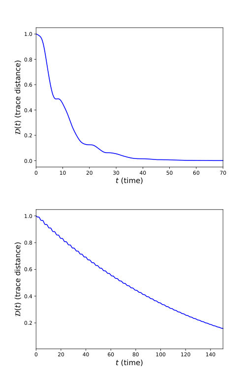
<figcaption class="paper-figure-caption"><b>Fig 1.</b> Figure 1. Top: Trace distance for a pair of states maximizing the non-Markovianity in the non-degenerate case, corresponding to d0 = (−0.25, 0.88, 0.39) for ε = 0.167. Bottom: Trace distance for a pair of state maximizing non-Markovianity in the degenerate case, that is ε = 0. Now the optimal pair corresponds to the vec- tor d0 = (0.99, 0.02, −0.11). In both cases with consider a Lorentz- Drude spectral density as in Eq. (39) with α = 0.1ω0, Λ = 1.2ω0 and β = 1.0ω0.</figcaption>
</figure>
<figure class="paper-figure-card">
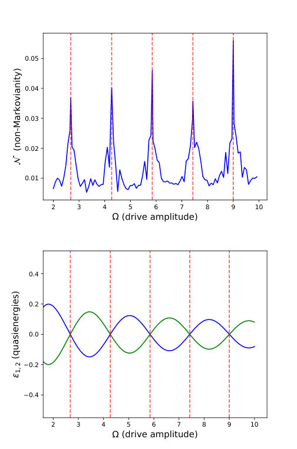
<figcaption class="paper-figure-caption"><b>Fig 2.</b> Figure 2. Non-Markovianity (top) and quasienergies (bottom) as a function of the driving strength Ω. Vertical dashed red lines indicate quasienergy degeneracies, occurring at Ω = {2.68, 4.27, 5.88, 7.43, 9.00}ω0. The relevant parameters of the spec- tral density are the same as in Fig. 1.</figcaption>
</figure>
</div>

<p><strong>Summary.</strong> The paper develops the Floquet time-convolutionless master equation to model open quantum systems under periodic driving while retaining full memory effects. By applying this formalism to the spin-boson model, the authors show that non-Markovianity exhibits sharp peaks precisely when quasienergy degeneracies occur. This work offers a rigorous theoretical tool for understanding how coherent spectral features dictate dissipative dynamics.</p>
<p><strong>Why it may be interesting.</strong> This work provides a powerful, non-Markovian framework for analyzing driven quantum systems, directly linking spectral properties (quasienergy crossings) to memory effects in dissipation, which is crucial for understanding engineered quantum dynamics.</p>
<details>
<summary>Detailed structure</summary>
<p><strong>Main problem.</strong> The primary goal is deriving a time-local quantum master equation that accurately describes the non-Markovian dynamics of open quantum systems subjected to external, periodic driving forces.</p>
<p><strong>Main result.</strong> The authors derive the Floquet time-convolutionless (TCL) master equation, demonstrating it captures strong non-Markovian effects characterized by sharp peaks in non-Markovianity at quasienergy crossings.</p>
<p><strong>Method.</strong> The methodology combines Floquet theory with the time-convolutionless projection operator technique to achieve a time-local description without resorting to the Markov approximation.</p>
<p><strong>Model / system.</strong> The study uses an open quantum system model, exemplified by the driven spin-boson system (a two-level system coupled to a bath of harmonic oscillators). The dynamics are governed by periodically time-dependent Hamiltonians.</p>
<p><strong>Key observables.</strong> Non-Markovianity measure (trace-distance based), quasienergies ($\epsilon_n$), and the evolution of the reduced density matrix components (Bloch vector $\mathbf{x}(t)$).</p>
<p><strong>Important parameters / regimes.</strong> Driving frequency ($\omega$), coupling strength, bath spectral density parameters ($\alpha, \Lambda, eta$), and the driving amplitude.</p>
<p><strong>Assumptions / limitations.</strong> The derivation is perturbative, restricted to second order in the coupling strength. It also assumes an initial factorized state for the system-environment interaction.</p>
<p><strong>Figures summary.</strong> Figures illustrate sharp peaks of non-Markovianity as a function of driving amplitude, linked to quasienergy crossings; they also show persistent trace distance revivals in the undriven case when $\epsilon=0$.</p>
<p><strong>Paper structure.</strong> The paper first establishes the general Floquet-TCL master equation. It then analyzes specific regimes (undriven, RWA circular driving) and focuses heavily on the degenerate quasienergy limit ($\epsilon=0$), providing explicit analytical forms for time evolution coefficients.</p>
</details>
<details>
<summary>Abstract</summary>
<p>We study the dynamics of open quantum systems driven by an external time-periodic force. Combining Floquet theory and the time-convolutionless projection operator technique we derive a time-local quantum master equation which exactly takes into account the periodic driving, while treating the system-environment interaction within second order in the coupling strength without performing the Markov approximation. The resulting equation of motion for the reduced density matrix is called Floquet time-convolutionless master equation. Employing the example of the driven spin-boson system, we demonstrate that this master equation is capable of describing strong non-Markovian effects, while yielding the Floquet-Lindblad master equation in the Markovian limit. A characteristic feature of memory effects in such driven dissipative systems is the emergence of sharp peaks of the trace-distance based non-Markovianity measure as a function of the driving amplitude, which can be traced back to quasienergy crossings leading to almost decoherence-protected subspaces through a quasienergy-induced dissipative decoupling mechanism.</p>
</details>
<p><sub><a href="#top">↑ back to top</a></sub></p>

<p><a id="paper-2607.24252"></a></p>
<h3 id="non-reciprocal-yet-equilibrium-critical-dynamics"><a href="http://arxiv.org/abs/2607.24252v1">Non-Reciprocal yet Equilibrium Critical Dynamics</a></h3>
<p><strong>Authors:</strong> Emir Sezik<br>
<strong>Type:</strong> theory · <strong>Category:</strong> statistical mechanics · <strong>PDF:</strong> <a href="https://arxiv.org/pdf/2607.24252v1">https://arxiv.org/pdf/2607.24252v1</a><br>
<strong>Analysis basis:</strong> full PDF text, analyzed in chunks
<strong>Topic relevance:</strong> 🔥 <code>non-equilibrium universality</code> <strong>4/5</strong> · <code>Keldysh / 2PI / non-Gaussian methods</code> <strong>3/5</strong> · <code>driven-dissipative phase transition</code> <strong>3/5</strong> · <code>methods for driven-dissipative</code> <strong>2/5</strong> · <code>non-equilibrium dynamics</code> <strong>2/5</strong> · <code>analog quantum simulation</code> <strong>1/5</strong> · <code>correlated / nonlocal dissipation</code> <strong>1/5</strong> · <code>correlated cavity matter</code> <strong>1/5</strong></p>
<div class="figure-strip-hint">↔ Scroll figures horizontally</div>
<div class="paper-figures-scroll">
<figure class="paper-figure-card">
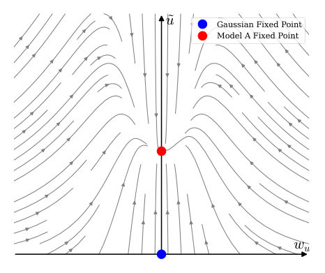
<figcaption class="paper-figure-caption"><b>Fig 1.</b> FIG. 1. RG flows for ˜u and wu at wD = 0 — There are two fixed points present in the system: the trivial Gaussian fixed point and the Model A fixed point. For d &lt; 4, the system flows to the stable Model A fixed point, where the ordering dynamics is effectively thermal. The RG flows are odd in wu as the physics is overall invariant under swapping the signs of all the non-reciprocal couplings, which simply determine the direction of the “run-and-chase” dynamics.</figcaption>
</figure>
</div>

<p><strong>Summary.</strong> This paper uses field-theoretic Renormalization Group techniques to analyze critical dynamics in systems with non-reciprocal couplings between multiple order parameters. The authors find that, despite the system being inherently non-equilibrium, the critical behavior is robustly governed by the standard equilibrium Model A universality class. This suggests that non-reciprocity alone may not be sufficient to generate entirely new universal physics.</p>
<p><strong>Why it may be interesting.</strong> This work provides rigorous theoretical tools (RG) to classify critical behavior in systems driven far from equilibrium. The finding that non-reciprocity does not change the universality class is a key result for understanding non-equilibrium phase transitions relevant to AMO physics and active matter.</p>
<details>
<summary>Detailed structure</summary>
<p><strong>Main problem.</strong> The study investigates whether non-reciprocal interactions induce novel universality classes in critical dynamics, generalizing analyses from single to multiple vector order parameters.</p>
<p><strong>Main result.</strong> The renormalization group analysis shows that the non-reciprocal couplings are RG-irrelevant, meaning the critical behavior is governed by the equilibrium Model A universality class despite the transition being into a non-equilibrium state.</p>
<p><strong>Method.</strong> The primary method employed is field-theoretic Renormalization Group (RG) analysis, performed to lowest order in $\epsilon = 4 - d$, applied to Langevin equations describing the dynamics.</p>
<p><strong>Model / system.</strong> The system models the ordering dynamics of two non-reciprocally coupled $n$-vector order parameters ($\phi_i \in \mathbb{R}^n$) governed by a noisy multi-component complex Ginzburg-Landau equation. This generalizes previous studies to higher symmetry ($U(n)$).</p>
<p><strong>Key observables.</strong> Critical dynamics, scaling exponents ($\eta, \eta', \eta_c$), response function $\chi(k, \omega)$, and correlation function $C(k, \omega)$.</p>
<p><strong>Important parameters / regimes.</strong> The dimensionality parameter $\epsilon = 4-d$, the number of components $n$, and dimensionless coupling ratios like $w_u$ and $w_D$.</p>
<p><strong>Assumptions / limitations.</strong> The analysis assumes that the structure of the Langevin equation is protected by symmetry, allowing for a perturbative RG treatment. The large-$n$ limit also simplifies calculations significantly.</p>
<p><strong>Figures summary.</strong> Figure 1 illustrates RG flows showing couplings flowing towards the stable Model A fixed point when $w_D=0$.</p>
<p><strong>Paper structure.</strong> The paper progresses from defining the non-reciprocal coupled system via a Langevin equation, to performing an RG analysis by calculating Z-factors and solving Callan-Symanzik equations, culminating in determining scaling exponents at stable fixed points.</p>
</details>
<details>
<summary>Abstract</summary>
<p>Non-reciprocal interactions find broad applicability in non-equilibrium and living systems. Their canonical implementation involves asymmetric couplings between two entities, which generally induce spatio-temporal patterns and time-dependent steady states that break time-translational invariance, representing a clear deviation from equilibrium physics. Although their phenomenology is well understood, whether non-reciprocal interactions induce new universality classes, and if so, under what conditions, remains an open question. In the present work, we perform a field-theoretic renormalization group (RG) analysis of the dynamics of two non-reciprocally coupled $n$-vector order parameters possessing a $U(n)$ symmetry, generalizing previous results to order parameters with multiple components, a feature that has been shown to generate novel non-equilibrium critical behavior in certain non-reciprocal systems. To lowest order in $ε= 4-d$, we find that the non-reciprocal coupling is RG-irrelevant, and the critical behavior is governed by the equilibrium fixed point of the Model A universality class of Hohenberg and Halperin with $2n$ vector components, even though the transition is into a non-equilibrium state. Our results demonstrate that non-reciprocity alone may not be sufficient to induce novel universality classes.</p>
</details>
<p><sub><a href="#top">↑ back to top</a></sub></p>

<p><a id="paper-2607.24619"></a></p>
<h3 id="control-of-morphology-and-topology-in-a-lattice-model-of-branching-morphogenesis"><a href="http://arxiv.org/abs/2607.24619v1">Control of morphology and topology in a lattice model of branching morphogenesis</a></h3>
<p><strong>Authors:</strong> Christian Hanauer, Frank Jülicher, Efe Ilker<br>
<strong>Type:</strong> theory · <strong>Category:</strong> statistical mechanics · <strong>PDF:</strong> <a href="https://arxiv.org/pdf/2607.24619v1">https://arxiv.org/pdf/2607.24619v1</a><br>
<strong>Analysis basis:</strong> full PDF text, analyzed in chunks
<strong>Topic relevance:</strong> 🔥 <code>non-equilibrium dynamics</code> <strong>4/5</strong> · <code>driven-dissipative phase transition</code> <strong>3/5</strong> · <code>methods for driven-dissipative</code> <strong>3/5</strong> · <code>non-equilibrium universality</code> <strong>3/5</strong> · <code>Frenkel-Kontorova</code> <strong>1/5</strong> · <code>Keldysh / 2PI / non-Gaussian methods</code> <strong>1/5</strong> · <code>correlated / nonlocal dissipation</code> <strong>1/5</strong></p>
<div class="figure-strip-hint">↔ Scroll figures horizontally</div>
<div class="paper-figures-scroll">
<figure class="paper-figure-card">
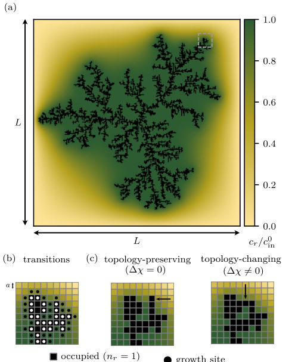
<figcaption class="paper-figure-caption"><b>Fig 1.</b> FIG. 1. Morphogen-controlled cluster growth. (a) Ex- ample cluster of size N = 7000 with associated morphogen field (green-yellow tone). (b) Magnification of the gray dashed region indicated in (a) with possible growth (filled circle) and degrowth sites (emtpy circle). (c) We present an example of a topology-preserving and topology-changing transition. The changed lattice site is highlighted by an arrow.</figcaption>
</figure>
<figure class="paper-figure-card">
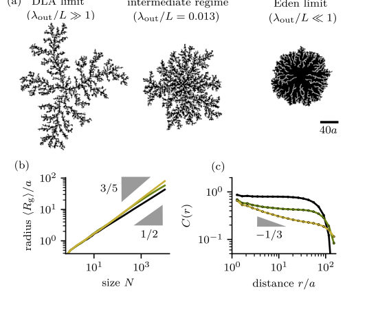
<figcaption class="paper-figure-caption"><b>Fig 2.</b> FIG. 2. Control of cluster morphologies by morphogen dynamics. (a) Clusters of size N = 104 obtained from Eq. (1) and Eq. (3) for different morphogen gradient lengths λout. (b) Radius of gyration for the structures shown in (a). (c) Correlation function C(r) for the structures shown in (a). The colors correspond to the DLA-limit (yellow), intermedi- ate regime (green), and Eden limit (black). In (b), (c) we averaged over M = 16 realizations.</figcaption>
</figure>
<figure class="paper-figure-card">
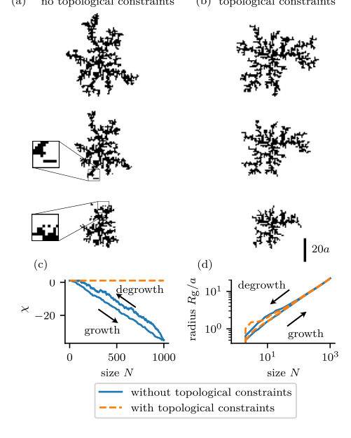
<figcaption class="paper-figure-caption"><b>Fig 3.</b> FIG. 3. Growth and degrowth characterization. (a) Degrowth of clusters without topological constraints. (b) De- growth of clusters with topological constraints. (c) Euler char- acteristic χ(t) of the structures with and without topological constraint. (d) Radius of gyration Rg as a function cluster size N for growth (blue) and degrowth (orange).</figcaption>
</figure>
<figure class="paper-figure-card">
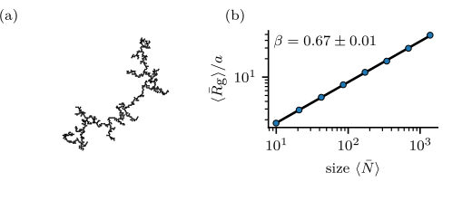
<figcaption class="paper-figure-caption"><b>Fig 4.</b> FIG. 5. Steady-state clusters on a hexagonal lattice (a) We show a steady-state snapshot of a cluster subject to alternating growth and degrowth on a hexagonal lattice. The shown cluster has size N = 692. (b) Radius of gyration as a function of stationary system size N averaged over M = 10 realizations.</figcaption>
</figure>
<figure class="paper-figure-card">
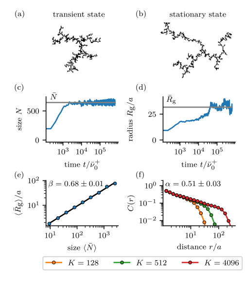
<figcaption class="paper-figure-caption"><b>Fig 5.</b> FIG. 4. Statistical properties of steady-state cluster obtained by alternating growth and degrowth. (a) We show a snapshot of a cluster subject to alternating growth and degrowth for t/¯ν+ 0 ≈3.96 · 103. The shown cluster has size N = 599. (b) We show a snapshot of a cluster subject to alternating growth and degrowth for t/¯ν+ 0 ≈1.1 · 105. The shown cluster has size N = 669. (c) Cluster size N(t) as a function of time t. (d) Radius of gyration Rg as a function of time t. (e) Average radius of gyration ⟨¯Rg⟩as a function of stationary system size ⟨¯ N⟩. (f) Correlation function C(r) as a function of distance r for the values. The displayed scaling exponent was determined for the case K =...</figcaption>
</figure>
</div>

<p><strong>Summary.</strong> This paper develops a sophisticated lattice model combining cell growth/degrowth dynamics with morphogen signaling gradients to simulate branching morphogenesis. By introducing local operators that enforce topological conservation, the authors study steady-state patterns. They find that these constrained steady states exhibit specific power-law scaling exponents ($eta \approx 0.67$), demonstrating how topology can regulate macroscopic pattern formation.</p>
<p><strong>Why it may be interesting.</strong> The framework of using non-equilibrium statistical mechanics principles (like reaction-diffusion coupled with stochastic processes) to model complex biological pattern formation is highly relevant for understanding active matter systems and phase transitions in soft matter physics.</p>
<details>
<summary>Detailed structure</summary>
<p><strong>Main problem.</strong> The study focuses on controlling both the morphology (shape) and topology of branching patterns using a lattice model governed by morphogen concentration gradients.</p>
<p><strong>Main result.</strong> The steady-state clusters formed under combined growth and degrowth, while maintaining topological constraints, exhibit a power-law scaling exponent for the radius of gyration ($eta \approx 0.67 - 0.68$), which is robust across different lattice symmetries.</p>
<p><strong>Method.</strong> The research employs stochastic lattice models simulated via Kinetic Monte Carlo (KMC) and utilizes quasi-stationary approximations to solve coupled reaction-diffusion equations for morphogen fields.</p>
<p><strong>Model / system.</strong> The system is a stochastic lattice model simulating branching morphogenesis, coupling cell occupation dynamics with the concentration of signaling molecules (morphogens). The dynamics include terms for growth ($
u^+$), degrowth ($
u^-$), and diffusion/reaction of morphogens ($c_r$).</p>
<p><strong>Key observables.</strong> Radius of gyration scaling exponent ($eta$), correlation function $C(r)$, Euler characteristic ($\chi$), and steady-state cluster morphology.</p>
<p><strong>Important parameters / regimes.</strong> Diffusion-limited aggregation (DLA) limit, Eden model limit, morphogen degradation rate ($k$), and the local topological control operator ($f_r$).</p>
<p><strong>Assumptions / limitations.</strong> The primary assumption is the quasistatic limit for the morphogen field, meaning its concentration relaxes much faster than the cluster growth/degrowth processes.</p>
<p><strong>Figures summary.</strong> Figures illustrate examples of morphogen-controlled cluster growth and potential sites for change. Comparisons are made between DLA, Eden limits, and steady-state dynamics, showing $R_g$ and $C(r)$ scaling behavior.</p>
<p><strong>Paper structure.</strong> The paper establishes the coupled stochastic lattice model (growth/degrowth + morphogen diffusion). It analyzes limiting cases (DLA/Eden) and then introduces a local operator to enforce topological constraints ($\delta\chi=0$). The main results compare the resulting steady-state scaling exponents against unconstrained growth.</p>
</details>
<details>
<summary>Abstract</summary>
<p>We present a lattice model for morphogen-controlled branching morphogenesis which combines ideas and concepts from non-equilibrium physics and developmental biology. In this model, the stochastic occupation dynamics of cells is coupled with signaling molecules (morphogens) produced by the cells. We investigate growth patterns governed by morphogen concentration gradients, spanning regimes ranging from the diffusion-limited aggregation limit to the stochastic surface growth (Eden model) limit. Moreover, we introduce control over topology by a local operator and study growth, degrowth, and steady-state dynamics of branched patterns. The topology-preserving steady-state clusters exhibit a power-law scaling of radius of gyration with cluster size, yielding the exponents $0.68\pm0.01$ in square lattice and $0.67\pm 0.01$ in hexagonal lattice.</p>
</details>
<p><sub><a href="#top">↑ back to top</a></sub></p>

<p><a id="paper-2607.24429"></a></p>
<h3 id="quantumfcsjl-efficient-full-counting-statistics-for-open-quantum-systems"><a href="http://arxiv.org/abs/2607.24429v1">QuantumFCS.jl: Efficient Full-Counting Statistics for Open Quantum Systems</a></h3>
<p><strong>Authors:</strong> Aaron Daniel, Marcelo Janovitch<br>
<strong>Type:</strong> theory · <strong>Category:</strong> other · <strong>PDF:</strong> <a href="https://arxiv.org/pdf/2607.24429v1">https://arxiv.org/pdf/2607.24429v1</a><br>
<strong>Analysis basis:</strong> full PDF text, analyzed in chunks
<strong>Topic relevance:</strong> 🔥 <code>methods for driven-dissipative</code> <strong>4/5</strong> · <code>Keldysh / 2PI / non-Gaussian methods</code> <strong>3/5</strong> · <code>correlated / nonlocal dissipation</code> <strong>2/5</strong> · <code>driven-dissipative phase transition</code> <strong>2/5</strong> · <code>non-equilibrium dynamics</code> <strong>2/5</strong> · <code>Tavis-Cummings &amp; cavity-many-emitter</code> <strong>1/5</strong> · <code>correlated cavity matter</code> <strong>1/5</strong> · <code>non-equilibrium universality</code> <strong>1/5</strong></p>
<div class="figure-strip-hint">↔ Scroll figures horizontally</div>
<div class="paper-figures-scroll">
<figure class="paper-figure-card">
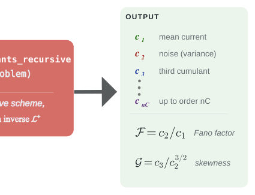
<figcaption class="paper-figure-caption"><b>Fig 1.</b> Figure 1: Overview of the FCS workflow implemented in QuantumFCS.jl. (a) An open quantum system is specified by a Hamiltonian H and jump operators Jk; a current is defined by selecting monitored jumps M and weights ν, which determine the integrated current N(t) = P</figcaption>
</figure>
<figure class="paper-figure-card">
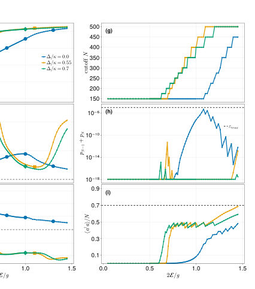
<figcaption class="paper-figure-caption"><b>Fig 2.</b> Figure 2: Full-counting statistics and cavity Fock-state distributions of the driven-dissipative Jaynes- Cummings model at fixed g/κ = 14 and ∆/κ ∈{0, 0.55, 0.70} (blue, orange, green), swept as a function of 2E/g. (a–c) Steady-state cavity Fock-state distribution Pn for each detuning, at three drives spanning that cut’s blockade-breakdown transition (below, at, and after: dotted, dashed, solid; values in the legends). Pn is on a logarithmic scale and the photon number n on a square-root scale to resolve the dim peak near n = 0. The vertical dashed line and the bottom-axis nscale tick mark the semi-classical scale nscale = (g/κ)2 = 196; the shaded band and the top-axis labels indicate the...</figcaption>
</figure>
<figure class="paper-figure-card">
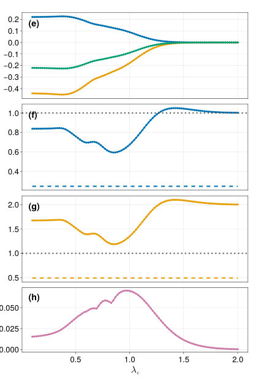
<figcaption class="paper-figure-caption"><b>Fig 3.</b> Figure 3: Antibunching regime of the non-linear heat engine. The left column shows the g sweep at fixed λc = 0.89, while the right column shows the λc sweep at the strongest viable hot-antibunching point of the g scan, g ≃7.21. Panels (a) and (e) show the scaled heat currents and output power, (b) and (f) the hot Fano factor with its TUR threshold and the Poisson reference, (c) and (g) the corresponding cold Fano factor, and (d) and (h) the RWA-link coherence CRWA. The sweep is centred around the blockade-like regime selected by the Laguerre matrix elements.</figcaption>
</figure>
<figure class="paper-figure-card">
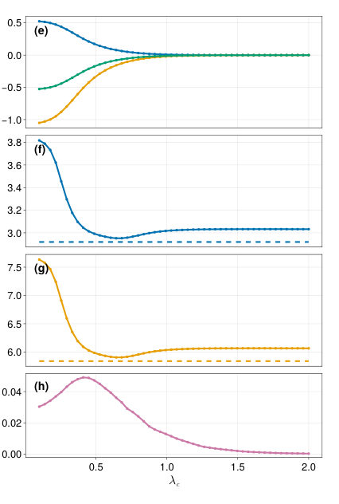
<figcaption class="paper-figure-caption"><b>Fig 4.</b> Figure 4: Finite-affinity regime approaching the TUR bound. The left column shows the g sweep at fixed λc = 0.7, ¯nh = 2.5, and ¯nc = 1.5, while the right column shows the λc sweep at fixed g = 10. Panels (a) and (e) show the scaled heat currents and output power, (b) and (f) the hot Fano factor with its TUR threshold, (c) and (g) the corresponding cold Fano factor, and (d) and (h) the RWA-link coherence CRWA. Reducing the thermodynamic affinity raises the Fano-factor thresholds and brings the hot and cold uncertainty products close to the classical bound while the currents and output power remain small.</figcaption>
</figure>
<figure class="paper-figure-card">
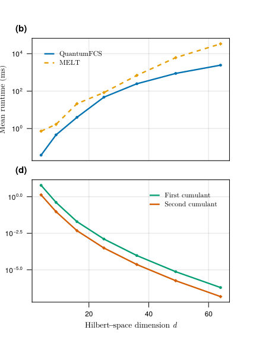
<figcaption class="paper-figure-caption"><b>Fig 5.</b> Figure 5: Benchmark summary for the linearised and dense quantum heat-engine models. (a) perfor- mance comparison for the linearised quantum heat-engine model, showing the mean runtime required to compute the first two cumulants as a function of Hilbert-space dimension using the default LU method. QuantumFCS.jl remains faster than Melt throughout the tested range, with the largest speed-ups appearing at the largest cutoffs. (b) performance comparison for the dense zero-bias circuit-QED heat- engine benchmark again using the default LU method. The dense benchmark is more demanding for both packages, but QuantumFCS.jl remains faster across all tested cutoffs. (c) relative error between the...</figcaption>
</figure>
</div>

<p><strong>Summary.</strong> This paper introduces QuantumFCS.jl, an efficient Julia package designed to calculate Full-Counting Statistics (FCS) for open quantum systems. It allows researchers to analyze current fluctuations—like photon or heat currents—by computing high-order cumulants. The tool is demonstrated on complex models such as the Jaynes-Cummings system and circuit-QED engines, providing deep insights into non-classical noise phenomena.</p>
<p><strong>Why it may be interesting.</strong> This is highly relevant as it provides a powerful, general computational tool for quantifying noise and non-Gaussian statistics in open quantum systems, which is crucial for understanding realistic quantum devices.</p>
<details>
<summary>Detailed structure</summary>
<p><strong>Main problem.</strong> The primary goal is characterizing current fluctuations (Full-Counting Statistics, FCS) in open quantum systems, moving beyond simple average currents.</p>
<p><strong>Main result.</strong> The authors introduce QuantumFCS.jl, an efficient Julia package that successfully calculates high-order cumulants for various quantum transport and optics problems.</p>
<p><strong>Method.</strong> The method relies on computing the cumulant generating function using a recursive algorithm applied to a counting-field-resolved density matrix governed by a tilted master equation.</p>
<p><strong>Model / system.</strong> The framework applies to open quantum systems described by Lindblad master equations, demonstrated on models like the Jaynes-Cummings system and circuit-QED heat engines.</p>
<p><strong>Key observables.</strong> Full-Counting Statistics (FCS), particle/electric/heat currents, and higher cumulants ($\langle\langle I^n 
angle
angle$) revealing phenomena like antibunching and intermittency.</p>
<p><strong>Important parameters / regimes.</strong> The calculation depends on defining monitored jump operators ($M$) and associated weights ($
u$). Benchmarks use specific parameters for heat engines and circuit-QED setups.</p>
<p><strong>Assumptions / limitations.</strong> The core theory assumes Markovian open-system dynamics governed by the Lindblad master equation.</p>
<p><strong>Figures summary.</strong> Figure 1 provides an overview of the FCS workflow, detailing the problem setup, the <code>LindbladFCS</code> structure, and inputs/outputs. Table 1 illustrates how different current types are defined via monitored jumps and weights.</p>
<p><strong>Paper structure.</strong> The paper introduces the theoretical framework for FCS using a recursive cumulant algorithm, details the implementation in QuantumFCS.jl supporting sparse solvers, and validates it through benchmarks on photon counting (Jaynes-Cummings) and heat-current fluctuations (Circuit-QED).</p>
</details>
<details>
<summary>Abstract</summary>
<p>Full-counting statistics (FCS) provides a systematic framework for characterising current fluctuations in quantum transport, quantum optics, and open quantum systems. We introduce QuantumFCS.jl, an open-source Julia package for efficient and flexible numerical FCS calculations. The package defines currents through monitored jump operators and weights, allowing particle, electric, and heat currents to be treated within the same workflow. It implements a recursive cumulant algorithm with dense, sparse, and iterative solver backends, making it suitable for models that are challenging for direct dense methods. We demonstrate the package on photon counting in a driven-dissipative Jaynes-Cummings system near the blockade-breakdown phase transition and on heat-current fluctuations in a non-linear circuit-QED heat engine. These examples show how higher cumulants reveal intermittency between bright and dim emission, antibunching, and provide probes of thermodynamic uncertainty relations. Benchmarks against an existing FCS implementation show substantial speed-ups.</p>
</details>
<p><sub><a href="#top">↑ back to top</a></sub></p>

<p><a id="paper-2607.24393"></a></p>
<h3 id="stochastic-counterdiabatic-driving-via-biorthogonal-liouvillian-eigenmodes"><a href="http://arxiv.org/abs/2607.24393v1">Stochastic Counterdiabatic Driving via Biorthogonal Liouvillian Eigenmodes</a></h3>
<p><strong>Authors:</strong> Sandeep Suresh Cranganore, Sebastian Lehner, Johannes Brandstetter, Max Welling<br>
<strong>Type:</strong> theory · <strong>Category:</strong> statistical mechanics · <strong>PDF:</strong> <a href="https://arxiv.org/pdf/2607.24393v1">https://arxiv.org/pdf/2607.24393v1</a><br>
<strong>Analysis basis:</strong> full PDF text, analyzed in chunks
<strong>Topic relevance:</strong> 🔥 <code>non-equilibrium dynamics</code> <strong>4/5</strong> · <code>driven-dissipative phase transition</code> <strong>3/5</strong> · <code>methods for driven-dissipative</code> <strong>3/5</strong> · <code>non-equilibrium universality</code> <strong>2/5</strong> · <code>Frenkel-Kontorova</code> <strong>1/5</strong> · <code>Keldysh / 2PI / non-Gaussian methods</code> <strong>1/5</strong> · <code>correlated / nonlocal dissipation</code> <strong>1/5</strong> · <code>entanglement &amp; information structure</code> <strong>1/5</strong></p>
<div class="figure-strip-hint">↔ Scroll figures horizontally</div>
<div class="paper-figures-scroll">
<figure class="paper-figure-card">
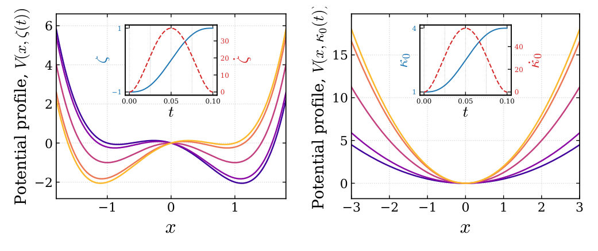
<figcaption class="paper-figure-caption"><b>Fig 1.</b> FIG. 1: Time-varying experimental potentials and control protocol profiles. (a) Double-well potential Vdw(x, ζt) = x4 −2x2 + ζtx with tilt parameter ζt driven from ζi = −1 to ζf = +1 over t ∈[0, 0.1]. The potentials start at t = 0.0 (violet coded) and modulates to t = 0.1 (orange coded) at the end of the protocol. Inset: protocol ζ(t) and driving rate ˙ζ(t). (b) Harmonic trap Vh(x, κ0(t)) = 1</figcaption>
</figure>
<figure class="paper-figure-card">
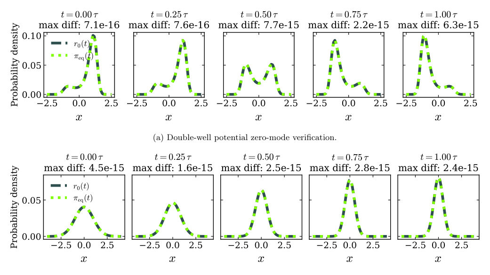
<figcaption class="paper-figure-caption"><b>Fig 2.</b> FIG. 2: Spectral verification of the discrete stationary zero-mode. The numerically diagonalized right eigenvector r0(t) (dashed grey profile) corresponding to the zero eigenvalue is coincides upto machine precision with the analytical instantaneous Boltzmann distribution πeq(t) (dotted green profile).</figcaption>
</figure>
<figure class="paper-figure-card">
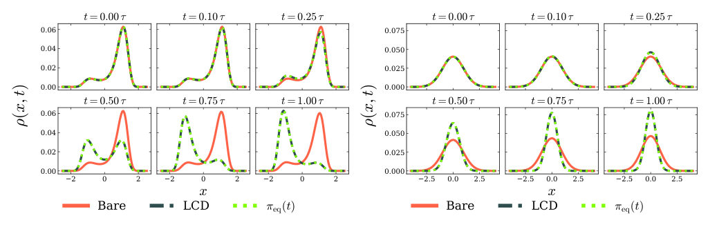
<figcaption class="paper-figure-caption"><b>Fig 3.</b> FIG. 3: Evolutionary snapshots of the probability density distributions. Spatiotemporal density profiles ρ(x, t) comparing the bare driving dynamics (solid orange line) and our spectral-based Liouvillian CD driving (LCD) (grey) against the instantaneous target Boltzmann distribution πeq(x, t) (dashed green) across selected temporal fractions of the protocol for (a) the double-well landscape and (b) the harmonic confinement trap.</figcaption>
</figure>
<figure class="paper-figure-card">
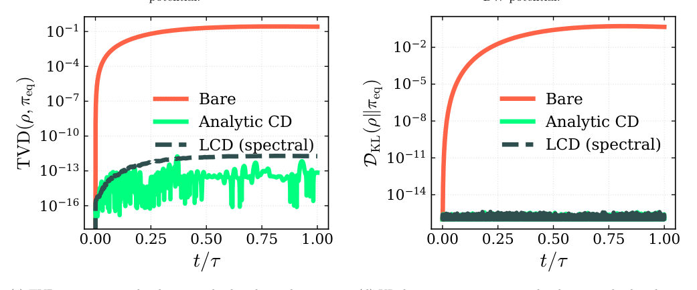
<figcaption class="paper-figure-caption"><b>Fig 4.</b> FIG. 4: Informational metrics comparison across potentials. Total variational distance (TVD) and KL divergence between the time-evolved FP density and the instantaneous equilibrium distribution. Top row (a, b) shows results of the TVD and KL when evolved under a DW potential respectively, whereas the bottom row (c, d) details the same for the harmonic potential. Bare (uncontrolled) evolution (solid orange line), LCD (dashed grey line) and if available, Analytic CD (solid green line).</figcaption>
</figure>
<figure class="paper-figure-card">
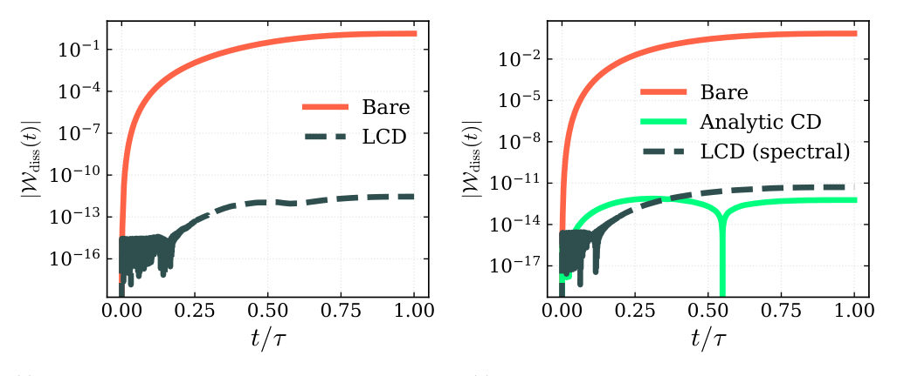
<figcaption class="paper-figure-caption"><b>Fig 5.</b> FIG. 5: Dissipation during Fokker–Planck time-evolution. Dissipated work magnitude plotted against normalized time t/τ. Bare (uncontrolled) evolution (solid orange line), LCD (dashed grey line) and if available, Analytic CD (solid green line).</figcaption>
</figure>
</div>

<p><strong>Summary.</strong> This paper develops Liouvillian Counterdiabatic Driving (LCD) to eliminate the excess dissipation that plagues free energy estimation when rapidly driving stochastic systems. By utilizing the biorthogonal eigenbasis of the Fokker-Planck generator, they construct a correction term that forces the probability distribution to track instantaneous equilibrium perfectly. This provides an exact, computationally robust tool for non-equilibrium statistical mechanics.</p>
<p><strong>Why it may be interesting.</strong> This work provides a rigorous, spectral method for controlling non-equilibrium dynamics in classical stochastic systems, drawing strong analogies to quantum shortcuts-to-adiabaticity concepts relevant to open quantum system control.</p>
<details>
<summary>Detailed structure</summary>
<p><strong>Main problem.</strong> Finite-time driving of stochastic systems causes excess dissipation, leading to a lag between the evolving probability distribution and the instantaneous equilibrium state, which degrades free energy estimators.</p>
<p><strong>Main result.</strong> The authors introduce Liouvillian Counterdiabatic Driving (LCD), a framework that exactly cancels this non-adiabatic lag by using the biorthogonal decomposition of the Fokker-Planck generator.</p>
<p><strong>Method.</strong> They construct the counterdiabatic correction operator directly from the spectral decomposition of the time-dependent Liouville operator, avoiding generalized coordinate transformations used in prior work.</p>
<p><strong>Model / system.</strong> The system is modeled by an overdamped particle governed by a time-dependent Fokker-Planck equation (Liouvillian $\hat{L}(t)$), verified using double-well and harmonic trap potentials.</p>
<p><strong>Key observables.</strong> Non-adiabatic lag, excess dissipated work ($W_{diss}$), Total Variation Distance (TVD), and Kullback-Leibler Divergence (KL divergence).</p>
<p><strong>Important parameters / regimes.</strong> Driving speed ($    au$), spectral gap size, and the number of retained relaxation modes ($M$).</p>
<p><strong>Assumptions / limitations.</strong> The method relies on the exact spectral decomposition of the Liouville operator; numerical stability is challenged in deep metastability regimes where gaps close.</p>
<p><strong>Figures summary.</strong> Figures compare diagonalization time scaling (dense vs. sparse/tridiagonal solvers) and show convergence metrics (TVD, DKL) demonstrating lag suppression across various protocols.</p>
<p><strong>Paper structure.</strong> The paper establishes the problem of non-adiabatic dissipation in stochastic driving; it develops LCD using biorthogonal decomposition and gauge transforms; it validates this approach numerically on standard potentials while also analyzing computational scalability via sparse matrix techniques.</p>
</details>
<details>
<summary>Abstract</summary>
<p>Finite-time driving of stochastic systems generates excess dissipation, causing the evolving probability distribution to lag behind the instantaneous equilibrium, and consequently degrading the convergence of nonequilibrium free energy estimators based on the Jarzynski equality. Escorted free energy simulations address the non-adiabatic lag by engineering control fields $\mathbf{u}$ that eliminate the lag, enforcing the trajectory-wise equality $\mathcal{W}_\mathbf{u} = Δ\mathcal{F}$, and yielding zero-variance estimators. However, constructing the escorting field in closed form remains a challenge, approached variously through flow-field methods, targeted free energy perturbation, or learned diffeomorphisms. In this work, we construct a complementary numerical framework based on gauge-type transforms instead of generalized coordinate transforms for perfect escorting based on the exact spectral decomposition of the time-dependent Fokker-Planck generator. The biorthogonal decomposition of the Liouville operator directly yields a counterdiabatic correction whose action on the instantaneous equilibrium distribution exactly cancels the non-adiabatic lag at arbitrary driving speed in formal analogy with shortcuts-to-adiabaticity techniques such as Berry's transitionless driving for quantum systems. Numerical verification for simulations of an overdamped particle in a time-varying double-well potential and harmonic traps confirms that the counterdiabatic condition is satisfied to machine precision, with the non-adiabatic lag suppressed by roughly twelve orders of magnitude in total variation distance and sixteen orders in KL divergence relative to the unescorted dynamics. As a diagnostic, we demonstrate vanishing dissipated work $\mathcal{W}_{\text{diss}}(t) \approx 0$ for the deterministically propagated Fokker-Planck density across all protocol speeds.</p>
</details>
<p><sub><a href="#top">↑ back to top</a></sub></p>

<p><a id="paper-2607.24404"></a></p>
<h3 id="a-bogoliubov-ratio-framework-for-quantum-information-diagnostics-of-time-dependent-two-mode-boson-hamiltonian"><a href="http://arxiv.org/abs/2607.24404v1">A Bogoliubov-ratio framework for quantum-information diagnostics of time-dependent two-mode Boson Hamiltonian</a></h3>
<p><strong>Authors:</strong> Shi-Cheng Liu, Lei-Hua Liu, Bichu Li, Yuebing Zhou, Hai-Qing Zhang<br>
<strong>Type:</strong> theory · <strong>Category:</strong> other · <strong>PDF:</strong> <a href="https://arxiv.org/pdf/2607.24404v1">https://arxiv.org/pdf/2607.24404v1</a><br>
<strong>Analysis basis:</strong> full PDF text, analyzed in chunks
<strong>Topic relevance:</strong> 🔥 <code>entanglement &amp; information structure</code> <strong>4/5</strong> · <code>methods for driven-dissipative</code> <strong>3/5</strong> · <code>driven-dissipative phase transition</code> <strong>2/5</strong> · <code>non-equilibrium dynamics</code> <strong>2/5</strong> · <code>Keldysh / 2PI / non-Gaussian methods</code> <strong>1/5</strong> · <code>analog quantum simulation</code> <strong>1/5</strong> · <code>correlated / nonlocal dissipation</code> <strong>1/5</strong> · <code>non-equilibrium universality</code> <strong>1/5</strong></p>
<div class="figure-strip-hint">↔ Scroll figures horizontally</div>
<div class="paper-figures-scroll">
<figure class="paper-figure-card">
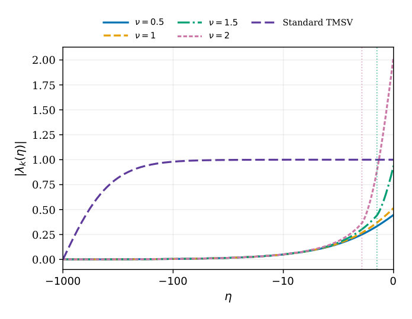
<figcaption class="paper-figure-caption"><b>Fig 1.</b> FIG. 1: Evolution of |λk| for the cosmological model and the standard TMSV benchmark. The</figcaption>
</figure>
<figure class="paper-figure-card">
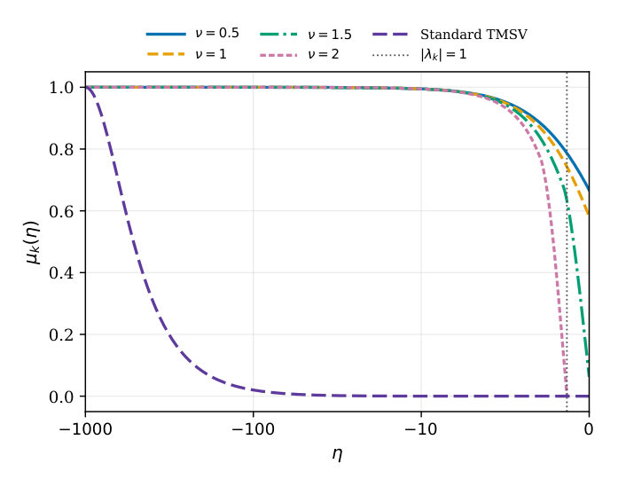
<figcaption class="paper-figure-caption"><b>Fig 2.</b> FIG. 2: One-mode purity for the cosmological model and the standard TMSV benchmark. The</figcaption>
</figure>
<figure class="paper-figure-card">
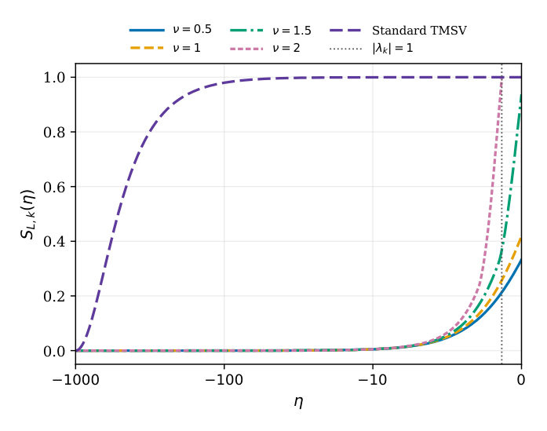
<figcaption class="paper-figure-caption"><b>Fig 3.</b> FIG. 3: Linear entropy for the cosmological model and the standard TMSV benchmark. The</figcaption>
</figure>
<figure class="paper-figure-card">
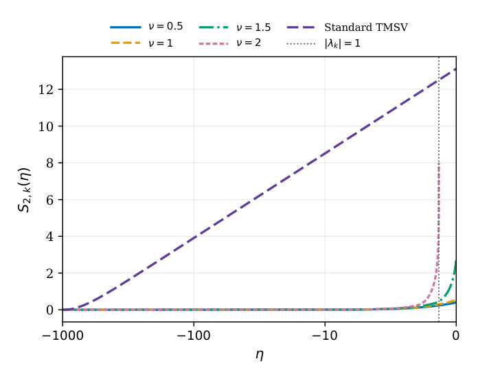
<figcaption class="paper-figure-caption"><b>Fig 4.</b> FIG. 4: R´enyi-2 entropy for the cosmological model and the standard TMSV benchmark. The</figcaption>
</figure>
<figure class="paper-figure-card">
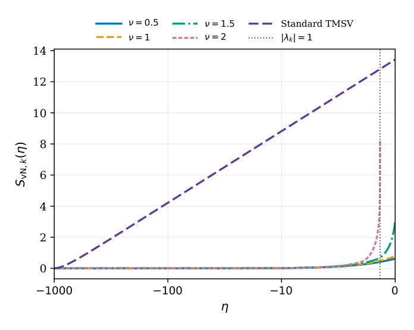
<figcaption class="paper-figure-caption"><b>Fig 5.</b> FIG. 5: Von Neumann entropy of the reduced k mode for the cosmological model and the standard</figcaption>
</figure>
</div>

<p><strong>Summary.</strong> The paper introduces the Bogoliubov-ratio framework to diagnose quantum information measures for any time-dependent two-mode bosonic system described by a quadratic Hamiltonian. By mapping the dynamics onto a single Riccati equation using the ratio $\lambda_k$, it allows researchers to calculate entanglement and purity metrics model-independently. This method is demonstrated in diverse physical settings, including cosmology and advanced optical parametric amplification.</p>
<p><strong>Why it may be interesting.</strong> This work provides a powerful, standardized diagnostic tool that cleanly separates the physics of the driving protocol (model-dependent) from universal quantum information metrics, which is highly valuable for analyzing complex open or time-varying bosonic systems in AMO/Optics.</p>
<details>
<summary>Detailed structure</summary>
<p><strong>Main problem.</strong> The goal is to create a unified, model-independent framework for diagnosing quantum information properties of time-dependent two-mode bosonic systems.</p>
<p><strong>Main result.</strong> The state dynamics are entirely characterized by the Bogoliubov ratio $\lambda_k$, which allows for the direct calculation of various entanglement and purity measures without full density matrix reconstruction.</p>
<p><strong>Method.</strong> The framework utilizes the Bogoliubov ratio $\lambda_k = eta_k/\alpha_k$ to reduce the complex state evolution governed by a quadratic Hamiltonian into a single, solvable Riccati differential equation.</p>
<p><strong>Model / system.</strong> The system is modeled by a general time-dependent two-mode bosonic Hamiltonian, applied successfully to both primordial cosmological perturbations and chirped-pulse nondegenerate optical parametric amplifiers.</p>
<p><strong>Key observables.</strong> Reduced-state purity, linear entropy, Rényi-2 entropy, and von Neumann entropy, all derived from the squared magnitude $q_k = |\lambda_k|^2$.</p>
<p><strong>Important parameters / regimes.</strong> The time-dependent coefficients $\omega_k(\eta)$ (frequency/detuning) and $g_k(\eta)$ (coupling/squeezing strength) govern the evolution of $\lambda_k$.</p>
<p><strong>Assumptions / limitations.</strong> The framework assumes the system's dynamics can be mapped onto a normalized paired Bogoliubov representation, and it is valid for quadratic Hamiltonians.</p>
<p><strong>Figures summary.</strong> Not specified in the notes; however, the analysis involves solving differential equations (Riccati equation) to track $\lambda_k(\eta)$ over time ($\eta$ or $  au$).</p>
<p><strong>Paper structure.</strong> The paper introduces the framework using a general Hamiltonian, derives the governing Riccati equation for $\lambda_k$, and then demonstrates its utility by applying it sequentially to two distinct physical examples: cosmology and optical parametric amplification.</p>
</details>
<details>
<summary>Abstract</summary>
<p>We present a compact and unified framework for quantum-information diagnostics of time-dependent two-mode bosonic systems based on the Bogoliubov ratio $λ_k(η) \equiv β_k(η)/α_k(η)$. For a general time-dependent quadratic two-mode Hamiltonian, the state dynamics is exactly reduced to a single complex Riccati equation for $λ_k$. Upon tracing out one partner mode, the spectrum of the one-mode reduced density matrix is determined entirely by the squared magnitude $q_k(η) = \vert{}λ_k(η)\vert{}^2$. Consequently, we could construct the explicit, model-independent formula for the for the reduced-state purity, linear entropy, Rényi-2 entropy, and von Neumann entropy without reconstructing and diagonalizing the reduced density matrix on a model-by-model basis using coupled squeezing parameters ($r_k, φ_k$). We demonstrate the utility of this framework in two distinct non-stationary setups: primordial cosmological perturbations and a chirped-pulse nondegenerate optical parametric amplifier. In the cosmological context, our formulation clarifies how background-induced phase rotation and frequency softening regulate squeezing growth and state mixedness; in the optical domain, it captures the delayed onset, suppression of squeezing accumulation, and late-time entropy saturation induced by finite pump duration and frequency chirp. By cleanly factorizing model-dependent driving protocols from universal information-theoretic metrics, this framework offers an efficient, standardized diagnostic tool for a broad class of parametrically driven quadratic bosonic systems.</p>
</details>
<p><sub><a href="#top">↑ back to top</a></sub></p>

<p><a id="paper-2607.23221"></a></p>
<h3 id="chiral-dynamics-of-an-intruder-across-dilute-and-hydrodynamic-regimes"><a href="http://arxiv.org/abs/2607.23221v1">Chiral Dynamics of an Intruder across Dilute and Hydrodynamic Regimes</a></h3>
<p><strong>Authors:</strong> Raphaël Maire, Ignacio Pagonabarraga<br>
<strong>Type:</strong> theory · <strong>Category:</strong> statistical mechanics · <strong>PDF:</strong> <a href="https://arxiv.org/pdf/2607.23221v1">https://arxiv.org/pdf/2607.23221v1</a><br>
<strong>Analysis basis:</strong> full PDF text, analyzed in chunks
<strong>Topic relevance:</strong> 🔥 <code>non-equilibrium dynamics</code> <strong>4/5</strong> · <code>methods for driven-dissipative</code> <strong>3/5</strong> · <code>non-equilibrium universality</code> <strong>3/5</strong> · <code>driven-dissipative phase transition</code> <strong>2/5</strong> · <code>Frenkel-Kontorova</code> <strong>1/5</strong> · <code>Keldysh / 2PI / non-Gaussian methods</code> <strong>1/5</strong> · <code>correlated / nonlocal dissipation</code> <strong>1/5</strong></p>
<div class="figure-strip-hint">↔ Scroll figures horizontally</div>
<div class="paper-figures-scroll">
<figure class="paper-figure-card">
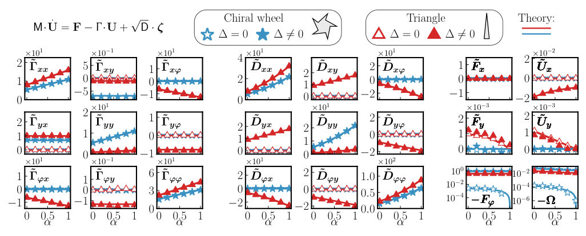
<figcaption class="paper-figure-caption"><b>Fig 1.</b> FIG. 1. Parameters entering Eq. (7) as functions of α for a chiral wheel and an isosceles triangle in a Gaussian bath. Simulation methods are detailed in the Supplemental Material (SM) [76], and the theory in the companion paper [72]. For the chiral wheel, the outermost-to-innermost radius ratio is R/r = 2, and adjacent vertices are separated by angles π(1 ± 1)/5. For the triangle, the height-to-base ratio is h/a = 5. Units are set by length ℓ(ℓ= r or a), mass m, and time ℓ/ p</figcaption>
</figure>
<figure class="paper-figure-card">
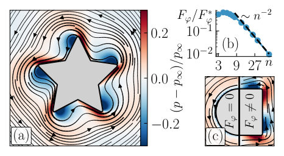
<figcaption class="paper-figure-caption"><b>Fig 2.</b> FIG. 3. Chiral bath around a fixed intruder. (a) Pressure field p approximated by half the trace of the virial stress and velocity streamlines for an achiral wheel in a chiral bath, with R/r = 2 and R/σ = 20. (b) Torque on regular n-gons with circumradius R/σ = 10. (c) Same as (a) for a circle (left, n →∞) and a square (right, n = 4). αb = 0.8, ∆b &gt; 0, nbπσ2 = 0.3, I →∞, M →∞, ∆= 0 and α = 1. We define ¯Fφ = πτR2. Each simulation ran for 108σ/ p</figcaption>
</figure>
<figure class="paper-figure-card">
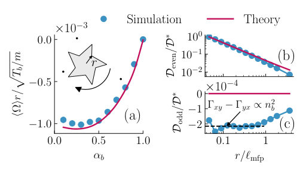
<figcaption class="paper-figure-caption"><b>Fig 3.</b> FIG. 2. Intruder dynamics within an explicit bath. (a) Angu- lar velocity versus bath restitution coefficient at nbr2 = 10−3. The cartoon is to scale, with r/σ = 30. (b), (c) Even and odd diffusivities: D = Deven1 + Doddε, versus bath density for αb = 0.5, with ℓmfp the bath mean free path. Momentum is weakly relaxed by a Langevin bath, ˙v = −γv+ p</figcaption>
</figure>
</div>

<p><strong>Summary.</strong> This work develops a comprehensive model to study how chirality affects the motion of an object (intruder) moving through a fluctuating bath. It successfully bridges two distinct physical regimes—the dilute gas limit and the dense hydrodynamic limit—by showing that the source of chiral transport changes fundamentally between these limits.</p>
<p><strong>Why it may be interesting.</strong> It provides a detailed theoretical mapping between microscopic collision dynamics (Boltzmann) and macroscopic continuum fluid mechanics (Stokes/hydrodynamics), which is crucial for understanding non-equilibrium transport in complex media.</p>
<details>
<summary>Detailed structure</summary>
<p><strong>Main problem.</strong> The study investigates how chiral dynamics of an intruder are governed by its geometry when moving through a non-equilibrium bath, comparing results across dilute and dense hydrodynamic regimes.</p>
<p><strong>Main result.</strong> The odd response (chirality) arises from distinct mechanisms in the dilute limit (fluctuation-driven) versus the dense limit (hydrodynamic edge currents), leading to a density-controlled crossover in dynamics.</p>
<p><strong>Method.</strong> Theoretical derivation using Boltzmann-Lorentz equations, followed by approximations yielding Langevin descriptions, and comparison with molecular dynamics simulations.</p>
<p><strong>Model / system.</strong> The system consists of an intruder of arbitrary shape immersed in a non-equilibrium bath of point particles. Chirality can be introduced via the bath, the intruder, or their coupling mechanisms.</p>
<p><strong>Key observables.</strong> Odd diffusivity ($D_{odd}$), rotational damping ($\Gamma$), and the torque generated by chiral edge currents.</p>
<p><strong>Important parameters / regimes.</strong> Bath density ($n_b$), restitution coefficient ($\alpha$), and the degree of chirality ($\Delta$).</p>
<p><strong>Assumptions / limitations.</strong> The Langevin equation is valid when bath-particle inertia is small compared to intruder inertia; in the dense limit, continuum approximations are used.</p>
<p><strong>Figures summary.</strong> Figures compare parameters for different shapes (wheel vs. triangle) and illustrate how even/odd diffusivities change with bath density, showing deviations from dilute theory at finite density.</p>
<p><strong>Paper structure.</strong> The paper progresses by first establishing the collision rules, deriving the Langevin equation in the dilute limit via Boltzmann-Lorentz analysis, and then extending the framework to the dense hydrodynamic regime where edge currents dominate the torque generation.</p>
</details>
<details>
<summary>Abstract</summary>
<p>We introduce and simulate an analytically tractable model for an intruder of arbitrary shape in a nonequilibrium bath, with chirality originating from the bath, the intruder, or their coupling. In the dilute regime, a Langevin description derived from a Boltzmann-Lorentz equation shows how intruder geometry governs ratchet effects and odd response. In the dense regime, the dynamics of the intruder are instead governed by the hydrodynamic modes of the bath and edge currents, which are described by a Stokes equation including a chiral torque density. Our results link shape to chiral transport and show that odd response arises from distinct mechanisms in the dilute and dense limits.</p>
</details>
<p><sub><a href="#top">↑ back to top</a></sub></p>

<p><a id="paper-2607.24632"></a></p>
<h3 id="krylov-complexity-and-spectral-density-of-bmn-matrix-model"><a href="http://arxiv.org/abs/2607.24632v1">Krylov complexity and spectral density of BMN matrix model</a></h3>
<p><strong>Authors:</strong> Dibakar Roychowdhury<br>
<strong>Type:</strong> theory · <strong>Category:</strong> strongly correlated electrons · <strong>PDF:</strong> <a href="https://arxiv.org/pdf/2607.24632v1">https://arxiv.org/pdf/2607.24632v1</a><br>
<strong>Analysis basis:</strong> full PDF text, analyzed in chunks
<strong>Topic relevance:</strong> 🔥 <code>entanglement &amp; information structure</code> <strong>4/5</strong> · <code>non-equilibrium dynamics</code> <strong>3/5</strong> · <code>non-equilibrium universality</code> <strong>2/5</strong> · <code>scars &amp; prethermalization</code> <strong>2/5</strong> · <code>Keldysh / 2PI / non-Gaussian methods</code> <strong>1/5</strong> · <code>analog quantum simulation</code> <strong>1/5</strong> · <code>driven-dissipative phase transition</code> <strong>1/5</strong> · <code>methods for driven-dissipative</code> <strong>1/5</strong></p>
<div class="figure-strip-hint">↔ Scroll figures horizontally</div>
<div class="paper-figures-scroll">
<figure class="paper-figure-card">
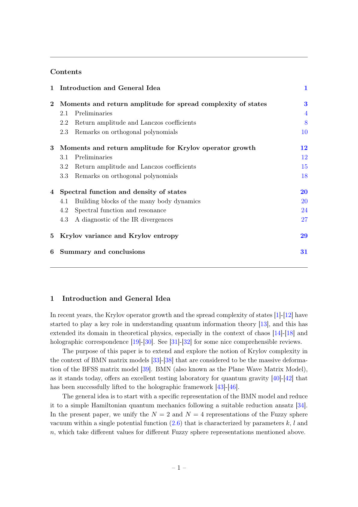
<figcaption class="paper-figure-caption"><b>Fig 1.</b> Low-resolution page preview, page 2</figcaption>
</figure>
<figure class="paper-figure-card">
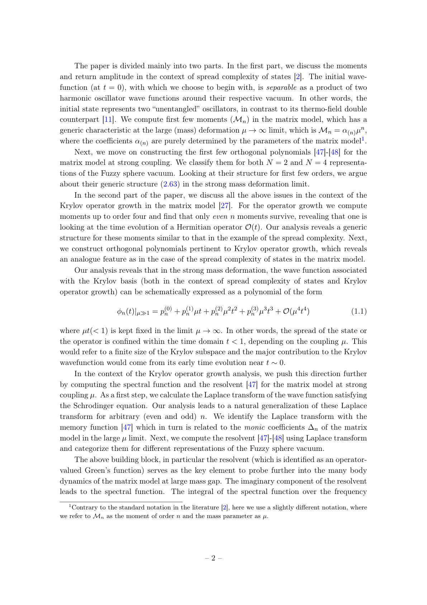
<figcaption class="paper-figure-caption"><b>Fig 2.</b> Low-resolution page preview, page 3</figcaption>
</figure>
<figure class="paper-figure-card">
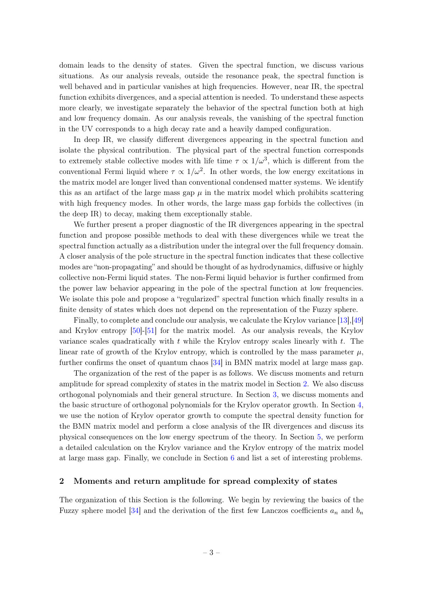
<figcaption class="paper-figure-caption"><b>Fig 3.</b> Low-resolution page preview, page 4</figcaption>
</figure>
<figure class="paper-figure-card">
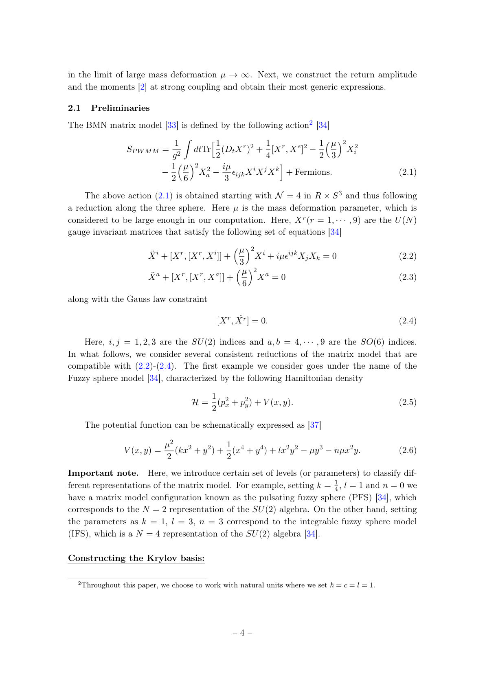
<figcaption class="paper-figure-caption"><b>Fig 4.</b> Low-resolution page preview, page 5</figcaption>
</figure>
<figure class="paper-figure-card">
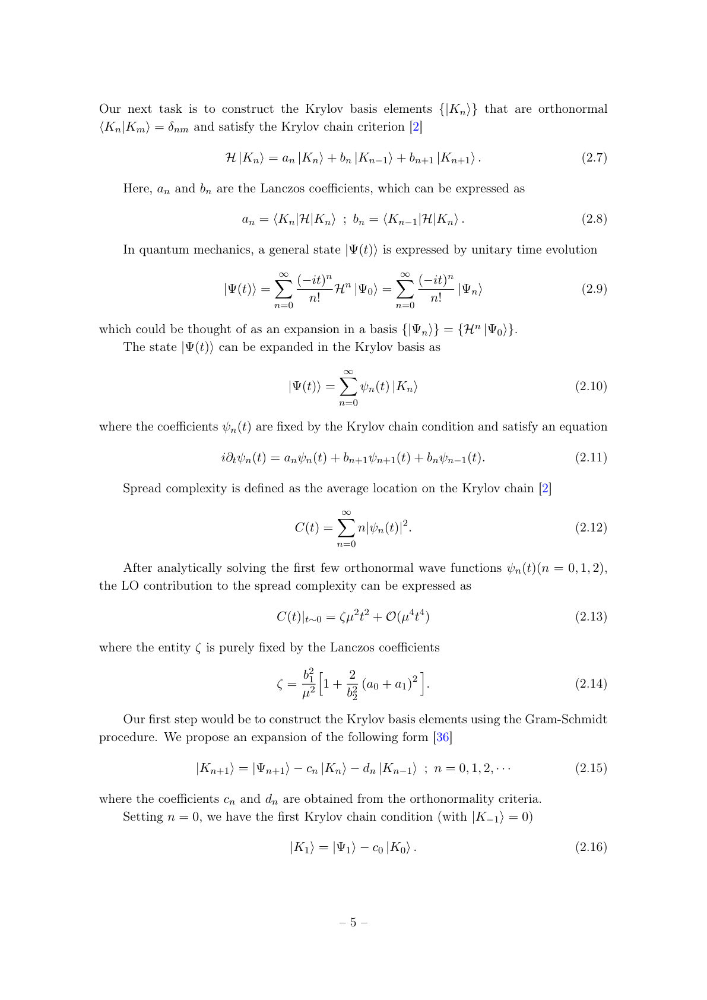
<figcaption class="paper-figure-caption"><b>Fig 5.</b> Low-resolution page preview, page 6</figcaption>
</figure>
</div>

<p><strong>Summary.</strong> This paper applies Krylov complexity theory to analyze the dynamics of the BMN matrix model at large mass gaps. By calculating spectral properties and entropy, the authors confirm that the system exhibits quantum chaotic behavior while also characterizing low-frequency excitations as non-propagating relaxation modes rather than conventional quasi-particles.</p>
<p><strong>Why it may be interesting.</strong> The use of complexity measures like Krylov entropy to diagnose quantum chaos in a highly interacting, strongly coupled system like the BMN model provides theoretical tools applicable to understanding thermalization and scrambling in complex many-body systems relevant to condensed matter physics.</p>
<details>
<summary>Detailed structure</summary>
<p><strong>Main problem.</strong> To use Krylov complexity as a diagnostic tool for understanding quantum many-body dynamics within the BMN matrix model, particularly in the regime of a large mass gap.</p>
<p><strong>Main result.</strong> The linear early-time growth of the Krylov entropy confirms the onset of quantum chaos in the BMN model. Furthermore, spectral analysis suggests that low-frequency collective modes are non-propagating diffusion or relaxation modes.</p>
<p><strong>Method.</strong> The authors calculate physical entities like moments and return amplitudes by constructing a Krylov basis set for the system's Hamiltonian. They analyze the resulting spectral function and entropy growth over time.</p>
<p><strong>Model / system.</strong> The study focuses on the BMN matrix model, which is a massive deformation of the BFSS matrix model relevant to quantum gravity and holographic correspondence. The dynamics are governed by matrices $X_r$ and $X_a$.</p>
<p><strong>Key observables.</strong> Krylov complexity (spread and operator growth), moments ($M_n$), return amplitudes, spectral function, density of states, Krylov variance, and Krylov entropy.</p>
<p><strong>Important parameters / regimes.</strong> Large mass gap ($\mu 	o \infty$) is the primary regime analyzed. The analysis also considers early time evolution ($t \sim 0$).</p>
<p><strong>Assumptions / limitations.</strong> The spectral function is treated as a distribution to handle divergences, and for spread complexity, the initial state is assumed separable.</p>
<p><strong>Figures summary.</strong> Not specified by notes; the text describes calculations of moments, entropy growth curves, and spectral features near resonance.</p>
<p><strong>Paper structure.</strong> The paper systematically calculates observables (moments, return amplitude) using the Krylov basis construction. It then analyzes the spectral properties, diagnosing divergences as non-propagating modes, and finally computes the entropy to confirm chaotic behavior.</p>
</details>
<details>
<summary>Abstract</summary>
<p>We use Krylov complexity as a typical diagnostic of quantum many body dynamics in the context of BMN matrix model at large mass gap. We calculate several physical entities, for example, the moments and return amplitudes at large mass deformation. We calculate them for both spread complexity of states as well as Krylov growth of operators in the matrix model. We propose a general expression for the moments at any given order $n$. We also discuss orthogonal polynomials for spread as well as operator Krylov complexity. In the context of the Krylov operator growth we further compute the spectral function and the density of states. A careful analysis of the spectral function near the resonance reveals various IR divergences in addition to the physical collective modes. These collective modes appear to be exceptionally stable due to large mass gap. On the other hand, the UV of the theory appears to be extremely damped due to higher scattering rates. We carefully diagnose these IR divergences near resonance which reveals that these collective modes are in fact non-propagating and should be thought of as diffusion modes or relaxation modes with infinite relaxation time. We also calculate the Krylov variance and Krylov entropy for the matrix model and in particular at early time. The linear early time growth of the Krylov entropy confirms the onset of quantum chaos in the matrix model at large mass gap.</p>
</details>
<p><sub><a href="#top">↑ back to top</a></sub></p>

<p><a id="paper-2607.22853"></a></p>
<h3 id="machine-learning-of-quantum-entanglement-from-noisy-measurements"><a href="http://arxiv.org/abs/2607.22853v1">Machine Learning of Quantum Entanglement from Noisy Measurements</a></h3>
<p><strong>Authors:</strong> Artur Czerwinski, Maciej Wiśniewski, Paweł Moszczyński<br>
<strong>Type:</strong> both · <strong>Category:</strong> quantum information and computing · <strong>PDF:</strong> <a href="https://arxiv.org/pdf/2607.22853v1">https://arxiv.org/pdf/2607.22853v1</a><br>
<strong>Analysis basis:</strong> full PDF text, analyzed in chunks
<strong>Topic relevance:</strong> 🔥 <code>entanglement &amp; information structure</code> <strong>4/5</strong> · <code>quantum measurements</code> <strong>3/5</strong> · <code>quantum optics experiment</code> <strong>3/5</strong> · <code>QC/QI experiment</code> <strong>2/5</strong> · <code>correlated / nonlocal dissipation</code> <strong>1/5</strong> · <code>measurement-induced transitions</code> <strong>1/5</strong> · <code>methods for driven-dissipative</code> <strong>1/5</strong></p>
<div class="figure-strip-hint">↔ Scroll figures horizontally</div>
<div class="paper-figures-scroll">
<figure class="paper-figure-card">
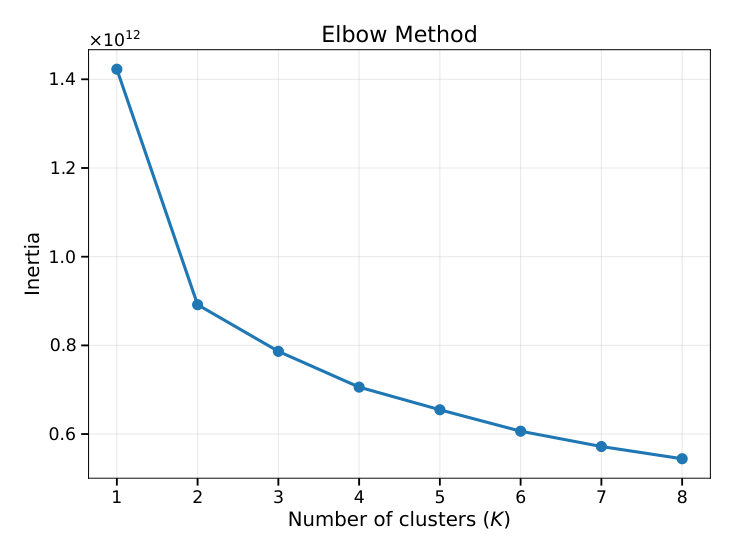
<figcaption class="paper-figure-caption"><b>Fig 1.</b> FIG. 1. Dependence of inertia on the number of clusters in the KMeans method. The largest decrease in inertia occurs for the transition from K = 1 to K = 2, which indicates two natural groups in the measurement-data space.</figcaption>
</figure>
<figure class="paper-figure-card">
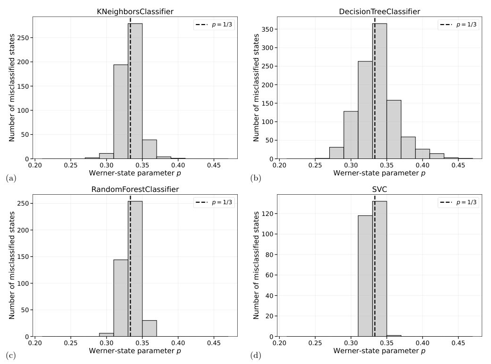
<figcaption class="paper-figure-caption"><b>Fig 2.</b> FIG. 2. Histograms showing the distribution of misclassified states as a function of the Werner-state parameter p for (a) KNeighborsClassifier, (b) DecisionTreeClassifier, (c) RandomForestClassifier, and (d) SVC.</figcaption>
</figure>
</div>

<p><strong>Summary.</strong> The authors demonstrate that Machine Learning can effectively characterize quantum entanglement in two-qubit photon systems by analyzing raw coincidence count data from simulated measurements. By training ML models on these noisy vectors, they achieve high accuracy in distinguishing entangled states from separable ones without needing to reconstruct the full density matrix. This proposes a computationally efficient pathway for quantum state verification in experimental settings.</p>
<p><strong>Why it may be interesting.</strong> This work directly addresses the practical challenge of characterizing fragile quantum resources like entanglement using noisy, realistic measurement data, which is crucial for experimental quantum optics and communication protocols.</p>
<details>
<summary>Detailed structure</summary>
<p><strong>Main problem.</strong> The work investigates using Machine Learning (ML) algorithms to identify and quantify quantum entanglement directly from noisy measurement statistics, bypassing complex density matrix reconstruction.</p>
<p><strong>Main result.</strong> ML methods achieve very high classification accuracy for distinguishing separable from entangled states, suggesting an efficient alternative to conventional state analysis under simulated noise conditions.</p>
<p><strong>Method.</strong> Supervised ML algorithms (e.g., Random Forests, SVMs) are trained on 16-dimensional measurement vectors derived from simulated SIC-POVM measurements of polarization-entangled photon pairs.</p>
<p><strong>Model / system.</strong> The system involves two-qubit polarization states analyzed using simulated symmetric, informationally complete POVM (SIC-POVM) measurement data. The analysis focuses on Werner states and Bell states to cover the entanglement spectrum.</p>
<p><strong>Key observables.</strong> Classification of separable vs. entangled states; continuous estimation of Concurrence ($C(
ho)$).</p>
<p><strong>Important parameters / regimes.</strong> Poissonian shot noise level (related to total photon count $N$); entanglement parameter $p$ for Werner states.</p>
<p><strong>Assumptions / limitations.</strong> The analysis is limited to simulated data affected by Poissonian counting noise, and the performance relies on the representativeness of the training set.</p>
<p><strong>Paper structure.</strong> The paper systematically applies various ML techniques (classification/regression) to datasets representing known entangled and separable states derived from simulating quantum measurements.</p>
</details>
<details>
<summary>Abstract</summary>
<p>In this work, we investigate the application of Machine Learning (ML) algorithms to the identification and quantitative characterization of quantum entanglement in polarization-entangled photon pairs. The analysis is based on simulated symmetric, informationally complete, positive operator-valued measure (SIC-POVM) measurement data, where each two-qubit state is represented by a 16-dimensional measurement vector corresponding to experimentally accessible coincidence counts. The generated SIC-POVM measurement data include Poissonian shot noise. Several supervised ML algorithms, including Logistic Regression, k-Nearest Neighbors, Decision Trees, Support Vector Machines, and Random Forests, are applied to the classification of separable and entangled states directly from raw measurement data, without explicit density matrix reconstruction or the use of conventional separability criteria. The study additionally explores clustering methods and nonlinear regression techniques for estimating continuous entanglement measures. The obtained results demonstrate that ML methods can achieve very high classification accuracy, even under extremely limited training conditions. These findings indicate that ML may provide an efficient alternative to conventional quantum-state analysis under simulated Poissonian noise conditions.</p>
</details>
<p><sub><a href="#top">↑ back to top</a></sub></p>

<p><a id="paper-2607.24038"></a></p>
<h3 id="magnetic-texture-winding-controls-fermion-parity-switches-in-an-interacting-math258math-wave-magnet-wire"><a href="http://arxiv.org/abs/2607.24038v1">Magnetic-texture winding controls fermion-parity switches in an interacting $p$-wave magnet wire</a></h3>
<p><strong>Authors:</strong> Hyun-Yong Lee<br>
<strong>Type:</strong> theory · <strong>Category:</strong> strongly correlated electrons · <strong>PDF:</strong> <a href="https://arxiv.org/pdf/2607.24038v1">https://arxiv.org/pdf/2607.24038v1</a><br>
<strong>Analysis basis:</strong> full PDF text, analyzed in chunks
<strong>Topic relevance:</strong> 🔥 <code>analog quantum simulation</code> <strong>4/5</strong> · <code>exotic spin models in light-matter</code> <strong>3/5</strong> · <code>spintronics-quantum-optics interface</code> <strong>3/5</strong> · <code>entanglement &amp; information structure</code> <strong>2/5</strong> · <code>Kondo &amp; dissipative impurity</code> <strong>1/5</strong> · <code>methods for driven-dissipative</code> <strong>1/5</strong> · <code>non-equilibrium dynamics</code> <strong>1/5</strong></p>
<div class="figure-strip-hint">↔ Scroll figures horizontally</div>
<div class="paper-figures-scroll">
<figure class="paper-figure-card">
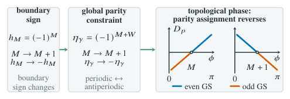
<figcaption class="paper-figure-caption"><b>Fig 1.</b> FIG. 1. Boundary condition and fermion-parity response. (a) Adjacent coplanar textures have pitches 𝑄𝑀and 𝑄𝑀+1. The spin rotations that align the textures obey 𝑈𝑗+𝐿= (−1)𝑀𝑈𝑗; adding one winding reverses this boundary sign. (b) 𝑊denotes the winding of the pair phase, and electron single-valuedness fixes the neutral- fermion boundary condition 𝜂𝛾= (−1)𝑀+𝑊. In the topological phase, 𝑀→𝑀+ 1 reverses the parity assignment of neighboring phase-winding branches and hence the leading flux slope of the signed splitting 𝐷𝑝= 𝐸corr odd −𝐸corr even. Adjacent physical textures also differ by a finite-size pitch shift.</figcaption>
</figure>
<figure class="paper-figure-card">
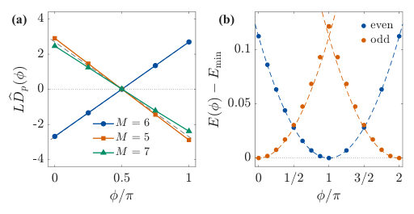
<figcaption class="paper-figure-caption"><b>Fig 2.</b> FIG. 2. Reversal of the parity assignment between adjacent texture windings. (a) The scaled, charging-corrected five-point es- timator 𝐿b𝐷𝑝,𝑀at 𝐿= 24 for adjacent texture windings 𝑀= 5, 6, 7: adding one winding reverses the parity assignment of the phase- winding energy branches. (b) Parity-resolved energies at the refer- ence winding 𝑀0 = 6 (𝐿= 24): the even- and odd-parity minima are displaced by 𝜋in 𝜙and approach the same bulk stiffness, although their finite-size curvatures differ (dashed parabolas). Numerical data and convergence analysis are given in the Supplemental Material.</figcaption>
</figure>
<figure class="paper-figure-card">
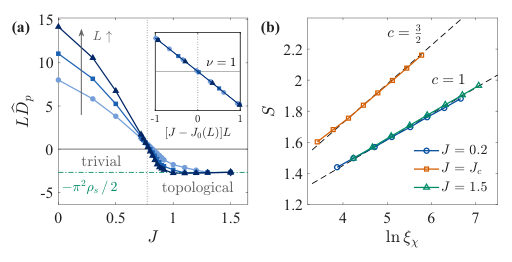
<figcaption class="paper-figure-caption"><b>Fig 3.</b> FIG. 3. Parity scaling and the Ising transition. (a) Scaled zero-flux parity-splitting estimator 𝐿b𝐷𝑝,𝑀at the reference pitch 𝑄= 𝜋/2 for 𝐿= 16, 24, 32, with additional 𝐽= 1.5 points for 𝐿= 40, 48: a finite neutral gap makes it grow with 𝐿in the trivial phase, whereas an 𝑂(1/𝐿) phase-winding energy makes it saturate near −𝜋2𝜌𝑠/2 in the topological phase. Inset: centering each size at its size-dependent zero 𝐽0(𝐿) gives a data collapse consistent with Ising finite-size scaling with 𝜈= 1. (b) Entanglement entropy 𝑆 versus finite-entanglement correlation length 𝜉𝜒; the fitted slopes are consistent with 𝑐≃1, 3/2, 1 across the transition. Details are in the Supplemental Material.</figcaption>
</figure>
</div>

<p><strong>Summary.</strong> This work analyzes an interacting p-wave magnet wire on a ring, showing that the magnetic texture winding imposes a global boundary condition. This topology dictates a switch in fermion parity between neighboring states, providing a robust, number-conserving probe of topological pairing mechanisms.</p>
<p><strong>Why it may be interesting.</strong> It provides a concrete realization where geometric/topological constraints (magnetic texture) dictate global many-body properties (fermion parity), which is highly relevant for understanding topological superconductivity in engineered materials or superconducting circuits.</p>
<details>
<summary>Detailed structure</summary>
<p><strong>Main problem.</strong> The study investigates how the winding number of a magnetic texture controls fundamental fermion-parity switches within an interacting p-wave magnet wire geometry.</p>
<p><strong>Main result.</strong> A global parity constraint causes neighboring phase-winding branches to reverse their fermion-parity assignment when the winding changes by one, demonstrating that the boundary condition is controlled by topology rather than local band structure.</p>
<p><strong>Method.</strong> The research employs a combination of exact fixed-number derivations and advanced numerical techniques like Density-Matrix Renormalization Group (DMRG) simulations.</p>
<p><strong>Model / system.</strong> The system is an interacting p-wave magnet wire realized on a ring geometry, modeled by Hamiltonians incorporating hopping, attraction, and exchange coupling modulated by local spin textures.</p>
<p><strong>Key observables.</strong> Signed parity splitting ($D_p(M)$), central charge ($c$) extracted from entanglement entropy, and finite-size curvatures ($
ho_s$).</p>
<p><strong>Important parameters / regimes.</strong> The winding number ($M$), the ring circumference ($L$), and the interaction strength parameters ($U, J$).</p>
<p><strong>Assumptions / limitations.</strong> The analysis assumes a fixed particle number sector and that the system can be mapped to low-energy theories involving charge and neutral Majorana modes.</p>
<p><strong>Figures summary.</strong> Figures illustrate pitch changes and parity sign reversals across adjacent textures; other figures show scaling behavior of energy splittings and entanglement entropy supporting critical transitions.</p>
<p><strong>Paper structure.</strong> The paper progresses from establishing the exact boundary condition imposed by magnetic winding to using DMRG simulations to observe parity reversal, followed by low-energy continuum analysis to characterize the nature of the quantum phase transition via central charge calculations.</p>
</details>
<details>
<summary>Abstract</summary>
<p>Coplanar magnetic spirals map locally onto uniform spin--orbit-coupled wires, but on a ring the rotating spin frame can change the electronic boundary condition. We prove, level by level in every fixed-particle-number sector, that even and odd texture windings impose boundary phases separated by half the single-electron flux period. Changing the winding by one also changes the physical pitch in inverse proportion to the circumference; a symmetric comparison removes this leading pitch correction. In the number-conserving topological phase, a global parity constraint then reverses the fermion-parity assignment of neighboring phase-winding branches. Density-matrix renormalization-group simulations show this reversal, support an Ising transition coexisting with a gapless charge mode, and relate the finite-size parity splitting to an independently calculated charge stiffness. Magnetic-texture winding thus changes the many-body spectrum through a global boundary condition that is not determined by the local band dispersion, providing a closed-geometry, number-conserving probe of topological pairing.</p>
</details>
<p><sub><a href="#top">↑ back to top</a></sub></p>

<p><a id="paper-2607.23579"></a></p>
<h3 id="permutationally-invariant-quantum-state-tomography-for-fermions"><a href="http://arxiv.org/abs/2607.23579v1">Permutationally Invariant Quantum State Tomography for Fermions</a></h3>
<p><strong>Authors:</strong> Shion Yamashika, Daisuke Yamamoto<br>
<strong>Type:</strong> theory · <strong>Category:</strong> quantum gases · <strong>PDF:</strong> <a href="https://arxiv.org/pdf/2607.23579v1">https://arxiv.org/pdf/2607.23579v1</a><br>
<strong>Analysis basis:</strong> full PDF text, analyzed in chunks
<strong>Topic relevance:</strong> 🔥 <code>analog quantum simulation</code> <strong>4/5</strong> · <code>quantum measurements</code> <strong>3/5</strong> · <code>entanglement &amp; information structure</code> <strong>2/5</strong> · <code>measurement-induced transitions</code> <strong>2/5</strong> · <code>correlated / nonlocal dissipation</code> <strong>1/5</strong> · <code>driven-dissipative phase transition</code> <strong>1/5</strong> · <code>methods for driven-dissipative</code> <strong>1/5</strong> · <code>non-equilibrium dynamics</code> <strong>1/5</strong></p>
<div class="figure-strip-hint">↔ Scroll figures horizontally</div>
<div class="paper-figures-scroll">
<figure class="paper-figure-card">
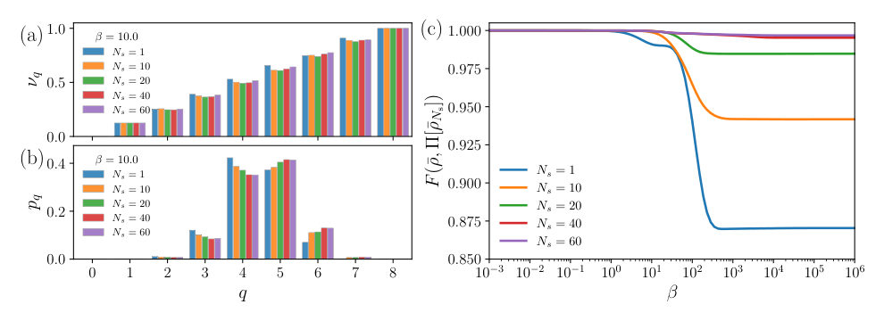
<figcaption class="paper-figure-caption"><b>Fig 1.</b> FIG. 1. Few-sample construction of a permutation-invariant disorder-averaged state in the complex SYK model. (a,b) Con- ditional uniform-mode occupation νq and particle-number distribution pq at β = 10, estimated from Ns disorder realizations. These two quantities are the only inputs inserted into Eq. (4) to construct Π(¯ρNs(β)). (c) Uhlmann fidelity between Π(¯ρNs(β)) and a large-sample reference for ¯ρ(β) obtained from 104 disorder realizations. We set N = 8 in all panels.</figcaption>
</figure>
<figure class="paper-figure-card">
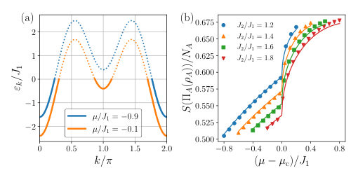
<figcaption class="paper-figure-caption"><b>Fig 2.</b> FIG. 2. (a) The energy dispersion relation of the Hamilto- nian (18) with J2/J1 = 1.5. The empty and occupied modes are plotted by dotted and solid lines, respectively. (b) von Neumann entropy of the permutation-symmetrized reduced density matrix for the ground state of the Hamiltonian (18). The symbols and solid lines are the exact numerical results and the asymptotic prediction in Eq. (17), respectively. We use NA = 27 and N = 214.</figcaption>
</figure>
</div>

<p><strong>Summary.</strong> The paper introduces a scalable tomography protocol for fermionic many-body states by exploiting particle permutation symmetry. It shows that the full state information can be captured using only the total particle number distribution and the occupation of one collective mode, both measurable in cold atom setups. This opens a pathway to characterize strongly correlated quantum matter experimentally.</p>
<p><strong>Why it may be interesting.</strong> This work provides an information-theoretic characterization tool that translates difficult quantum state reconstruction problems into measurable observables ($p_q, 
u_q$) directly accessible in modern ultracold atom experiments.</p>
<details>
<summary>Detailed structure</summary>
<p><strong>Main problem.</strong> To develop a scalable quantum state tomography protocol for fermionic many-body states that avoids the exponential measurement cost associated with full reconstruction.</p>
<p><strong>Main result.</strong> The permutation-symmetrized density matrix can be fully reconstructed using only two quantities—the total particle number distribution ($p_q$) and the conditional occupation of a single collective mode ($
u_q$)—which scale linearly with system size.</p>
<p><strong>Method.</strong> The protocol leverages $U(1)$ particle-number symmetry to decompose the state and utilizes properties derived from permutation invariance (Schur's Lemma) to simplify the required observables.</p>
<p><strong>Model / system.</strong> The theory is applied to fermionic many-body states, particularly those with $U(1)$ particle-number symmetry, demonstrated using models like the Sachdev-Ye-Kitaev (SYK) model and free-fermion chains in optical lattices.</p>
<p><strong>Key observables.</strong> Total particle-number distribution ($p_q$) and conditional occupation of a uniform mode ($
u_q$).</p>
<p><strong>Important parameters / regimes.</strong> System size ($N$), temperature/inverse coupling strength ($eta$), and the filling parameter ($\varrho$).</p>
<p><strong>Assumptions / limitations.</strong> The protocol is restricted to states with $U(1)$ particle-number symmetry, and some derivations rely on asymptotic approximations (e.g., Stirling's formula).</p>
<p><strong>Figures summary.</strong> Figure 1 shows reconstruction using the SYK model via estimated $
u_q$ and $p_q$. Figure 2 demonstrates calculating von Neumann entropy for free fermions across a Lifshitz transition, showing predicted nonanalyticity.</p>
<p><strong>Paper structure.</strong> The paper first introduces the scalability problem of tomography, derives the PIQT protocol based on symmetry constraints, applies it to reconstruct complex states (SYK), and then uses the framework to calculate thermodynamic quantities like von Neumann entropy for free fermions near a critical point.</p>
</details>
<details>
<summary>Abstract</summary>
<p>Quantum state tomography provides complete information about a quantum state, but its measurement cost generally grows exponentially with system size. In many-particle quantum simulators, this challenge is further compounded by the limited accessibility of local measurements and controls. Here we develop a tomography protocol for permutation-invariant fermionic many-body states with U(1) particle-number symmetry. We show that any such state is completely determined by the distribution of the total particle number and the occupation of a single collective mode within each particle-number sector, both of which are accessible in current ultracold-atom experiments. The number of required observables scales only linearly with the system size. More generally, the protocol reconstructs the permutation-symmetrized component of arbitrary U(1)-symmetric fermionic states, which can still encode nontrivial many-body and state-level structure beyond conventional few-body observables. We demonstrate this protocol in interacting non-Gaussian states of the complex Sachdev-Ye-Kitaev model and in free-fermion chains across a Lifshitz transition. This framework opens a route toward information-theoretic characterization of strongly correlated itinerant quantum matter in experimentally realistic fermionic quantum simulators.</p>
</details>
<p><sub><a href="#top">↑ back to top</a></sub></p>

<p><a id="paper-2607.24718"></a></p>
<h3 id="coincidence-free-certification-and-quantification-of-spatial-entanglement-with-stimulated-parametric-down-conversion"><a href="http://arxiv.org/abs/2607.24718v1">Coincidence free certification and quantification of spatial entanglement with stimulated parametric down conversion</a></h3>
<p><strong>Authors:</strong> M. G. Damaceno, G. H. dos Santos, N. Rubiano da Silva, S. P. Walborn, P. H. Souto Ribeiro<br>
<strong>Type:</strong> experiment · <strong>Category:</strong> other · <strong>PDF:</strong> <a href="https://arxiv.org/pdf/2607.24718v1">https://arxiv.org/pdf/2607.24718v1</a><br>
<strong>Analysis basis:</strong> full PDF text, analyzed in chunks
<strong>Topic relevance:</strong> 🔥 <code>quantum optics experiment</code> <strong>4/5</strong> · <code>quantum measurements</code> <strong>3/5</strong> · <code>entanglement &amp; information structure</code> <strong>2/5</strong> · <code>measurement-induced transitions</code> <strong>2/5</strong> · <code>QC/QI experiment</code> <strong>1/5</strong> · <code>driven-dissipative phase transition</code> <strong>1/5</strong> · <code>interference shaping light</code> <strong>1/5</strong></p>
<div class="figure-strip-hint">↔ Scroll figures horizontally</div>
<div class="paper-figures-scroll">
<figure class="paper-figure-card">
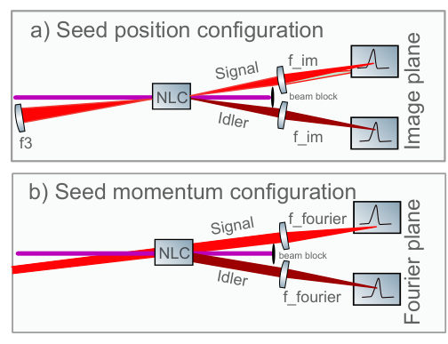
<figcaption class="paper-figure-caption"><b>Fig 1.</b> FIG. 1. Conceptual diagram of the two seed beam config- urations used to obtain the conditional distributions of the idler beam. Only first-order intensity measurements are per- formed. Measurements of the signal field are used only to calibrate the seed profile at the crystal. Details in the main text.</figcaption>
</figure>
<figure class="paper-figure-card">
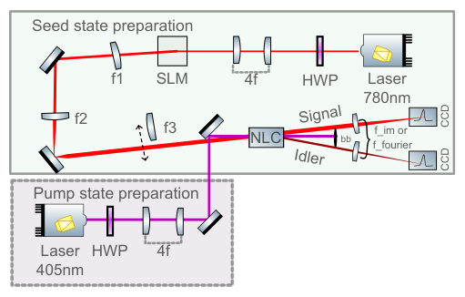
<figcaption class="paper-figure-caption"><b>Fig 2.</b> FIG. 2. Experimental setup. See main text for details.</figcaption>
</figure>
<figure class="paper-figure-card">
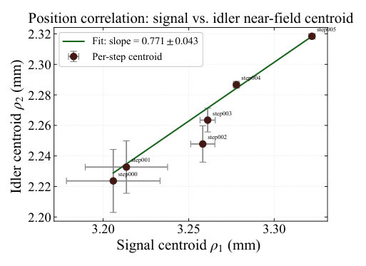
<figcaption class="paper-figure-caption"><b>Fig 3.</b> FIG. 5. Position correlation: idler near field centroid ρ2 vs. signal near field centroid ρ1 across the six seed positions. Lin- ear fit slope 0.77 ± 0.04.</figcaption>
</figure>
<figure class="paper-figure-card">
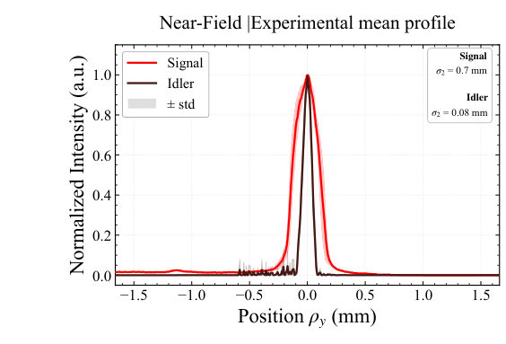
<figcaption class="paper-figure-caption"><b>Fig 4.</b> FIG. 3. Near-field intensity profile along the vertical posi- tion for the position configuration (image plane): signal and stimulated idler mean profiles over N = 10 repetitions; shaded bands indicate the standard deviation across repetitions. Sec- ond moment widths: σ2 = 0.7 mm (signal), σ2 = 0.08 mm (idler).</figcaption>
</figure>
<figure class="paper-figure-card">
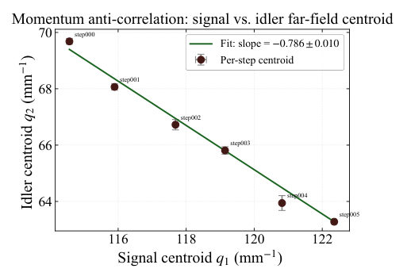
<figcaption class="paper-figure-caption"><b>Fig 5.</b> FIG. 6. Momentum anticorrelation: idler far field centroid q2 vs. signal far field centroid q1. Linear fit slope 0.79 ± 0.01, confirming anticorrelation.</figcaption>
</figure>
</div>

<p><strong>Summary.</strong> This paper details a novel technique to certify and quantify spatial entanglement in photon pairs generated by SPDC. By employing stimulated parametric down conversion (StimPDC), the authors replace slow coincidence counting with simple intensity measurements on the idler beam. This method successfully verifies entanglement using established witnesses, proving its utility for quantum optics experiments where precise photon detection is challenging.</p>
<p><strong>Why it may be interesting.</strong> This work provides a highly practical experimental protocol for quantum optics that bypasses major technical hurdles in quantum measurement, making entanglement characterization accessible under difficult experimental conditions.</p>
<details>
<summary>Detailed structure</summary>
<p><strong>Main problem.</strong> The core problem is certifying and quantifying spatial entanglement of photon pairs generated by SPDC without relying on slow, coincidence-counting measurements.</p>
<p><strong>Main result.</strong> Spatial entanglement and EPR steering can be robustly certified using only intensity measurements from the idler beam via stimulated parametric down conversion (StimPDC).</p>
<p><strong>Method.</strong> The authors use StimPDC by seeding the signal mode with a bright classical beam, allowing them to measure conditional idler states using standard intensity detectors instead of coincidence counting.</p>
<p><strong>Model / system.</strong> The system involves entangled photon pairs generated via SPDC. The measurement technique utilizes stimulated emission into the idler field, which is then analyzed in both transverse position and momentum bases.</p>
<p><strong>Key observables.</strong> Entanglement witnesses (Reid criterion, MGVT product) and the Fedorov ratio ($R$), calculated from measured conditional variances ($\sigma^2$).</p>
<p><strong>Important parameters / regimes.</strong> The correlation strength is tracked by varying the pump waist size; finite seed widths only broaden measured variances.</p>
<p><strong>Assumptions / limitations.</strong> The analysis assumes paraxial and quasi-monochromatic approximations, and the method's robustness relies on imperfections only broadening measurements, preventing false positives.</p>
<p><strong>Figures summary.</strong> Figures illustrate conceptual diagrams for position-space and momentum-space seeding (Fig. 1). Other figures show measured near-field/far-field intensity profiles and correlation plots confirming expected linear fits.</p>
<p><strong>Paper structure.</strong> The paper introduces the StimPDC method to replace coincidence counting, derives the conditional idler state, applies entanglement witnesses (Reid, MGVT), calculates the Fedorov ratio, and presents results demonstrating robust certification of spatial entanglement using only intensity measurements.</p>
</details>
<details>
<summary>Abstract</summary>
<p>Using stimulated emission, a photon pair source can be characterized by seeding the signal mode with a bright classical beam and measuring the stimulated idler field, thus replacing two-photon coincidence counting with classical intensity detection. We apply this approach to the continuous transverse spatial degrees of freedom of a down conversion source and show that it is possible to certify spatial entanglement with only intensity measurements. We demonstrate this capability through variance-based entanglement and steering witnesses, as well as the Fedorov ratio. This method is useful for studying entanglement properties of photon pair sources in conditions where alignment and photon counting measurements are difficult and time-consuming.</p>
</details>
<p><sub><a href="#top">↑ back to top</a></sub></p>

<p><a id="paper-2607.23833"></a></p>
<h3 id="position-measurement-of-a-levitated-particle-with-vectorial-light"><a href="http://arxiv.org/abs/2607.23833v1">Position measurement of a levitated particle with vectorial light</a></h3>
<p><strong>Authors:</strong> Daniel Tandeitnik, Lucas Bianchi, Sebastian Gutierrez-Bernal, Joanna A. Zielińska, Paulo A. Maia Neto, Thiago Guerreiro<br>
<strong>Type:</strong> theory · <strong>Category:</strong> other · <strong>PDF:</strong> <a href="https://arxiv.org/pdf/2607.23833v1">https://arxiv.org/pdf/2607.23833v1</a><br>
<strong>Analysis basis:</strong> full PDF text, analyzed in chunks
<strong>Topic relevance:</strong> 🔥 <code>quantum measurements</code> <strong>4/5</strong> · <code>interference shaping light</code> <strong>3/5</strong> · <code>measurement-induced transitions</code> <strong>3/5</strong> · <code>Keldysh / 2PI / non-Gaussian methods</code> <strong>2/5</strong> · <code>methods for driven-dissipative</code> <strong>1/5</strong> · <code>non-equilibrium dynamics</code> <strong>1/5</strong></p>
<div class="figure-strip-hint">↔ Scroll figures horizontally</div>
<div class="paper-figures-scroll">
<figure class="paper-figure-card">
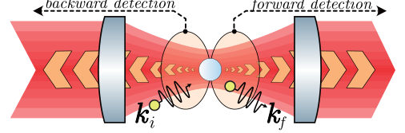
<figcaption class="paper-figure-caption"><b>Fig 1.</b> FIG. 1. Schematic representation of coherent photon scatter- ing and position detection in an optical levitation setup. The trapping beam (propagating left to right) is strongly focused by a high-NA objective. The levitated nanoparticle acts as a driven point-dipole, interacting with an incident photon (wavevector ki) and scattering it into a final state (wavevec- tor kf). The resulting dipole radiation pattern carries the particle’s spatial information into the far-field. This coherent signal is subsequently gathered either by the trapping objec- tive (backward detection) or by a secondary collection lens (forward detection) for phase-sensitive measurement.</figcaption>
</figure>
<figure class="paper-figure-card">
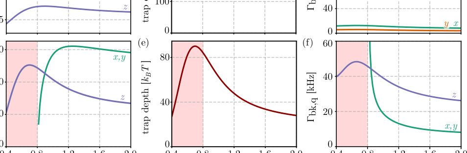
<figcaption class="paper-figure-caption"><b>Fig 2.</b> FIG. 3. Comparison of optomechanical trapping parameters for a linearly polarized fundamental Gaussian beam (top row, a–c) and a radially polarized beam (bottom row, d–f) as a function of the objective filling factor f0. All calculations assume a total incident laser power of 1 W prior to the trapping objective (NA = 0.75), and a SiO2 particle with diameter 156 nm. (a, d) Mechanical trap frequencies Ωq/2π. (b, e) Trap depth at the focal origin, normalized by the thermal energy kBT at 293 K. (c, f) Backaction decoherence rates Γbk,q. The light red shaded regions denote unstable parameter regimes. For the radial mode, this instability occurs at lower filling factors (f0 ≲0.8) where the...</figcaption>
</figure>
<figure class="paper-figure-card">
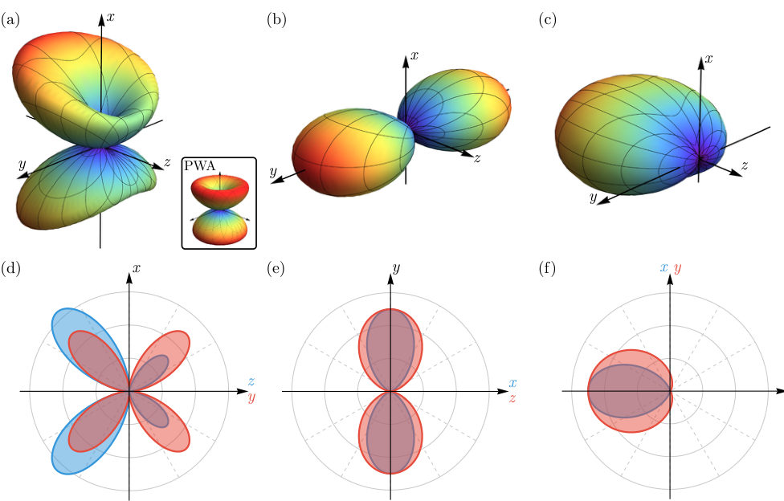
<figcaption class="paper-figure-caption"><b>Fig 3.</b> FIG. 4. Spatial distribution of the position information radiated by a dipolar scatterer trapped in a strongly focused fundamental Gaussian beam (linearly polarized along the x-axis). (a)-(c) Three-dimensional IRP for displacements along the x, y, and z axes. (d)-(f) Two-dimensional polar cross-sections of the 3D patterns, evaluated in the xz-plane (blue) and xy-plane or yz-plane (red). Inset in (a) shows the PWA prediction.</figcaption>
</figure>
<figure class="paper-figure-card">
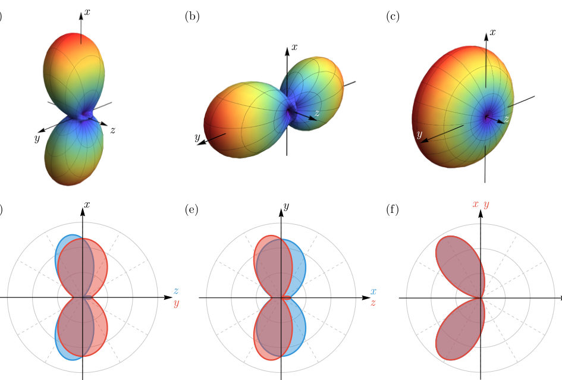
<figcaption class="paper-figure-caption"><b>Fig 4.</b> FIG. 5. Spatial distribution of the position information radiated by a dipolar scatterer trapped in a strongly focused radial beam. (a)-(c) Three-dimensional Information Radiation Patterns for the x, y, and z axes. (d)-(f) Two-dimensional polar cross-sections.</figcaption>
</figure>
<figure class="paper-figure-card">
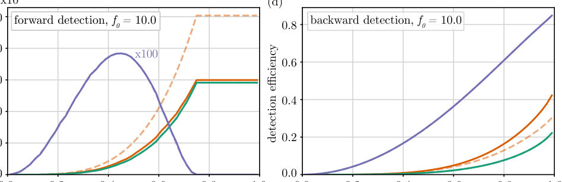
<figcaption class="paper-figure-caption"><b>Fig 5.</b> FIG. 6. Comparison of detection efficiencies ηdet,q evaluated using the ASR (solid lines) and analytical PWA (dashed lines) for a linearly (x-)polarized trapping beam. (a, b) Forward and backward detection efficiencies for a Gaussian beam with filling factor f0 = 1.0. (c, d) Efficiencies in the uniform aperture limit (f0 = 10.0). In the forward detection panels (a, c), the trapping NA is fixed at 0.75, yielding peak efficiencies once the collection NA captures the entire scattered cone. Note that ηz is scaled by a factor of 100 for visibility in the forward direction.</figcaption>
</figure>
</div>

<p><strong>Summary.</strong> The paper introduces a comprehensive, fully vectorial theory to analyze how position measurements are limited by photon scattering noise in levitated nanoparticles. By using the Angular Spectrum Representation, it accurately models non-paraxial effects, demonstrating that structured light like radial polarization can suppress unwanted axial backaction forces compared to standard Gaussian traps.</p>
<p><strong>Why it may be interesting.</strong> This work provides advanced theoretical tools for designing next-generation quantum sensors by rigorously accounting for the polarization and angular structure of light fields on measurement backaction limits.</p>
<details>
<summary>Detailed structure</summary>
<p><strong>Main problem.</strong> To develop a fully vectorial, semiclassical formalism for characterizing position measurement backaction noise and detection efficiency in optically levitated dipolar scatterers.</p>
<p><strong>Main result.</strong> The vectorial approach shows that structured light fields, such as radially polarized beams, can fundamentally suppress axial measurement backaction compared to conventional Gaussian traps.</p>
<p><strong>Method.</strong> The authors use the angular spectrum representation (ASR) within a semiclassical scattering formalism to calculate momentum transfer and detection efficiency, moving beyond paraxial approximations.</p>
<p><strong>Model / system.</strong> The system involves levitating mesoscopic nanoparticles trapped by arbitrary optical fields. The theoretical model incorporates Langevin dynamics and treats the measurement process using photon shot noise statistics.</p>
<p><strong>Key observables.</strong> Information radiation pattern, mode-matching efficiency ($\eta_{det,q}$), backaction force spectral density ($S_{b,k,q}$), and the resulting effective imprecision noise ($\Delta x_{	ext{eff}}$).</p>
<p><strong>Important parameters / regimes.</strong> The generalized geometric factor ($ ext{C}_q$), filling factor ($f_0$), and the comparison between linearly vs. radially polarized beams.</p>
<p><strong>Assumptions / limitations.</strong> The analysis assumes the Rayleigh scattering regime ($a \ll \lambda$) and employs a semiclassical treatment for the trapping field, while using ASR to handle non-paraxial effects.</p>
<p><strong>Figures summary.</strong> Figures compare optomechanical parameters (like backaction rates) for different polarizations as a function of beam filling factor, highlighting differences between vectorial and paraxial approximations.</p>
<p><strong>Paper structure.</strong> The paper builds from developing the general vectorial scattering formalism using ASR to calculate momentum transfer ($    ext{C}<em det_q="det,q">q$), then applies this framework to quantify detection efficiency ($\eta</em>$), culminating in specific examples comparing Gaussian versus radially polarized traps.</p>
</details>
<details>
<summary>Abstract</summary>
<p>We develop a fully vectorial, semiclassical scattering formalism for optically levitated dipolar scatterers, expressed within the angular spectrum representation and applicable to arbitrary trapping-field configurations as well as to high--numerical-aperture focusing. Within this framework, we introduce the information radiation pattern to characterize the angular distribution of position-dependent information and use a Richards--Wolf projection of the scattered field onto the local-oscillator mode to quantify the resulting mode-matching efficiency, yielding experimentally realistic forward- and backward-detection efficiencies. As a worked example, we apply the formalism to a radially polarized trapping beam and confirm that the axial recoil heating rate is reduced relative to a conventional linearly polarized Gaussian tweezer. The theoretical framework is implemented in LevitationToolbox, an open-source Python package intended to support the design and optimization of near-Heisenberg-limited levitated optomechanical experiments.</p>
</details>
<p><sub><a href="#top">↑ back to top</a></sub></p>

<p><a id="paper-2607.23498"></a></p>
<h3 id="current-cross-correlations-as-probes-for-poor-mans-majorana-states"><a href="http://arxiv.org/abs/2607.23498v1">Current cross-correlations as probes for poor man's Majorana states</a></h3>
<p><strong>Authors:</strong> Saatwik Patnaik, Aditya Saran, Himadri S Dhar, Pertti Hakonen, Thierry Martin, Bhaskaran Muralidharan<br>
<strong>Type:</strong> theory · <strong>Category:</strong> other · <strong>PDF:</strong> <a href="https://arxiv.org/pdf/2607.23498v1">https://arxiv.org/pdf/2607.23498v1</a><br>
<strong>Analysis basis:</strong> full PDF text, analyzed in chunks
<strong>Topic relevance:</strong> 🔥 <code>Keldysh / 2PI / non-Gaussian methods</code> <strong>4/5</strong> · <code>methods for driven-dissipative</code> <strong>3/5</strong> · <code>driven-dissipative phase transition</code> <strong>2/5</strong> · <code>Kondo &amp; dissipative impurity</code> <strong>1/5</strong> · <code>analog quantum simulation</code> <strong>1/5</strong> · <code>exotic spin models in light-matter</code> <strong>1/5</strong> · <code>non-equilibrium dynamics</code> <strong>1/5</strong></p>
<div class="figure-strip-hint">↔ Scroll figures horizontally</div>
<div class="paper-figures-scroll">
<figure class="paper-figure-card">
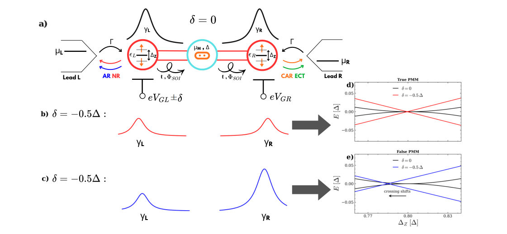
<figcaption class="paper-figure-caption"><b>Fig 1.</b> Figure 1. Preliminaries. (a) Device schematic of the MKC with three quantum dots. The middle dot is superconducting, and the outer dots have spin-split energy levels due to the presence of an external magnetic field. The energy levels of the outer dots can be controlled via a gate potential. The interdot tunneling has both spin-conserving and spin-flip tunnel processes facilitated by the Rashba spin-orbit interaction. The MKC is coupled to normal metallic leads through which currents flow. At the interfaces between the leads and the MKC system, one has four local (nonlocal) processes, namely, the NR (ECT) and the AR (CAR) processes. (b) A schematic of a true PMM mode that does not hybridize...</figcaption>
</figure>
<figure class="paper-figure-card">
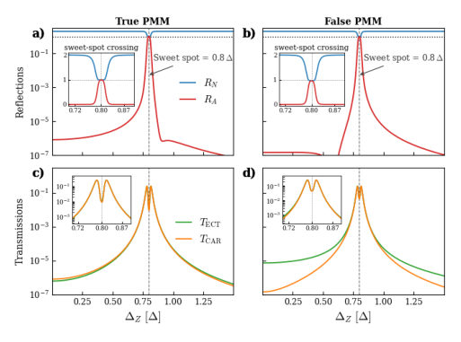
<figcaption class="paper-figure-caption"><b>Fig 2.</b> Figure 2. Reflection and transmission calculated at E = 0, traced over both spin channels, through the device as a func- tion of the Zeeman field, ∆z. (a), (b) At the sweet spot, the AR reaches its maximum, and the NR reaches its minimum. (c), (d) Away from the sweet spot, the AR probability reduces to less than that of CAR and ECT, in order of magnitude. Both true and false PMMs show very similar primary charac- teristics around the sweet spot when ∆z is tuned.</figcaption>
</figure>
<figure class="paper-figure-card">

<figcaption class="paper-figure-caption"><b>Fig 3.</b> Figure 4. Effect of dot detuning on competing transport processes. (a) and (b) represent the energy spectrum of the system as a function of left-dot detuning δ for true and false PMM parameters, respectively. (c) and (d) show the corre- sponding transmission ratio TECT/TCAR at E = 0 (blue) and at the bias point E = eV = 0.002∆(red dash). At the sweet spot (δ = 0), both regimes are indistinguishable. However, under finite detuning, the true PMM remains robustly sta- ble, whereas the false PMM is highly sensitive, rapidly losing its zero-energy degeneracy and exhibiting a sharply diverging transmission ratio. (e) and (f) Shows the ratio of RN/RA for the same range of detuning at E = 0 (blue)...</figcaption>
</figure>
<figure class="paper-figure-card">

<figcaption class="paper-figure-caption"><b>Fig 4.</b> Figure 3. Current correlations and the Fano factor (a) and (b) illustrate the local current correlations SLL at a bias of eV = 0.002∆as a function of the Zeeman field ∆Z for true and false PMMs, respectively. We also plot the correlation integrand SI LL(E = 0) to illustrate the cross-term cancellation discussed in the text. (c) and (d) depict the local Fano factor FLL = SLL/2eILL, at negligible bias, which goes to zero at the sweet spot, due to perfect transmission at zero energy. There is also a suppression below the Andreev (F = 2) limit to the single-electron (F = 1) Poissonian limit, away from the sweet spot. (e) and (f) show the cross-correlation SLR, with the black line showing the...</figcaption>
</figure>
<figure class="paper-figure-card">

<figcaption class="paper-figure-caption"><b>Fig 5.</b> Figure 5. Current correlations and conductance profiles at a small bias, eV = 2 × 10−3∆. (a)–(d) and (e)–(h) map the transport and noise signatures for true and false PMM configurations, respectively, as a function of Zeeman field detuning ∆Z −∆sweet Z and left-dot chemical potential detuning ϵL −ϵsweet L . The columns display the local correlations SLL [(a), (e)], non- local cross-correlation noise SLR [(b), (f)], local conductance GLL [(c), (g)], and non-local conductance GLR [(d), (h)]. While the local signatures (SLL and GLL) remain qualitatively similar near the sweet spot for both cases, the non-local measurements exhibit distinct profiles that help to distinguish between the True and...</figcaption>
</figure>
</div>

<p><strong>Summary.</strong> The paper proposes using current cross-correlations as a superior diagnostic tool to verify the existence of Poor Man's Majorana modes in quantum dot arrays. By analyzing how these correlations behave when tuning away from ideal sweet spots, the authors demonstrate that only true topological states exhibit characteristic robustness. This provides a clear experimental pathway for confirming non-local entanglement signatures.</p>
<p><strong>Why it may be interesting.</strong> This work provides a concrete, measurable signature (noise correlation) that can distinguish between trivial and topological zero-energy states, which is crucial for experimental realization of Majorana physics in superconducting nanostructures.</p>
<details>
<summary>Detailed structure</summary>
<p><strong>Main problem.</strong> The authors aim to develop diagnostic methods beyond standard differential conductance spectroscopy to verify the true non-locality and topological order of Poor Man's Majorana (PMM) modes.</p>
<p><strong>Main result.</strong> Current cross-correlations are shown to be robust, exhibiting remarkable stability around the PMM sweet spot with respect to outer dot detuning, which distinguishes true topologically protected PMMs from false ones.</p>
<p><strong>Method.</strong> The study employs advanced transport theory, calculating zero-frequency current cross-correlation functions ($S_{LR}$) using the Keldysh Non-Equilibrium Green's Function (NEGF) formalism and scattering matrix techniques.</p>
<p><strong>Model / system.</strong> The system is modeled by a minimal Kitaev chain (MKC) setup with three quantum dots, emulating a topological superconductor. The physics is described using the Bogoliubov-de Gennes Hamiltonian in Nambu spinor space.</p>
<p><strong>Key observables.</strong> Current cross-correlations ($S_{LR}$), local conductance ($G_{LL}$), and the Fano factor ($F_{LL}$).</p>
<p><strong>Important parameters / regimes.</strong> The analysis focuses on the PMM sweet spot, zero energy ($E=0$), and varying detuning ($\delta$) of outer quantum dots.</p>
<p><strong>Assumptions / limitations.</strong> The calculations assume the $T=0$ limit for simplicity in Fermi functions and utilize the wide-band limit approximation for self-energies from normal leads.</p>
<p><strong>Figures summary.</strong> Figures illustrate the MKC device schematic, comparing true vs. false PMM modes under detuning; they also show energy landscapes around sweet spots and calculated local/nonlocal current correlation signatures ($S_{LL}$ and $S_{LR}$).</p>
<p><strong>Paper structure.</strong> The paper progresses from identifying the limitations of conductance spectroscopy to deriving the theoretical framework for current cross-correlations using NEGF, culminating in demonstrating the unique diagnostic power of these correlations.</p>
</details>
<details>
<summary>Abstract</summary>
<p>The minimal Kitaev chain that emulates a topological superconductor with three quantum dots offers a tunable platform for potentially hosting poor man's Majorana (PMM) modes. Asserting the need to go beyond differential conductance spectroscopy, we introduce current-current correlations as a viable framework for verifying their true non-locality. The robustness of the PMM modes, specifically with respect to delocalization as the system is tuned away from sweet spots, we show, is embedded in the relative magnitudes of the nonlocal transport processes. This aspect is adeptly captured by current cross-correlations, whose features show remarkable stability around the PMM sweet spot, specifically with respect to the detuning of an outer dot. We establish this as a prominent feature and a diagnostic for true PMMs even in the short chain limit. Our results accentuate the need for current cross-correlation measurements as a diagnostic framework for unambiguously verifying true non-locality of entangled states as well as topologically protected states.</p>
</details>
<p><sub><a href="#top">↑ back to top</a></sub></p>

<p><a id="paper-2607.24050"></a></p>
<h3 id="pound-drever-hall-feedforward-for-trapped-ion-optical-qubits"><a href="http://arxiv.org/abs/2607.24050v1">Pound-Drever-Hall Feedforward for Trapped-Ion Optical Qubits</a></h3>
<p><strong>Authors:</strong> Jia-Yang Gao, Jianwei Lee, Morteza Ahmadi, Manas Mukherjee<br>
<strong>Type:</strong> experiment · <strong>Category:</strong> other · <strong>PDF:</strong> <a href="https://arxiv.org/pdf/2607.24050v1">https://arxiv.org/pdf/2607.24050v1</a><br>
<strong>Analysis basis:</strong> full PDF text, analyzed in chunks
<strong>Topic relevance:</strong> 🔥 <code>QC/QI experiment</code> <strong>4/5</strong> · <code>quantum measurements</code> <strong>3/5</strong> · <code>interference shaping light</code> <strong>2/5</strong> · <code>quantum optics experiment</code> <strong>2/5</strong> · <code>measurement-induced transitions</code> <strong>1/5</strong> · <code>methods for driven-dissipative</code> <strong>1/5</strong></p>
<div class="figure-strip-hint">↔ Scroll figures horizontally</div>
<div class="paper-figures-scroll">
<figure class="paper-figure-card">

<figcaption class="paper-figure-caption"><b>Fig 1.</b> FIG. 1: Experimental setup for phase noise stabilization, DSHI measurement, intensity servo, and pulsing AOM The PDH feedforward setup recycles the PID control signal through a delayed BNC cable, which is then applied as feedforward to a fiber electro-optic modulator (Jenoptik PM1750). A delayed fiber is used to match the optical phase between the two arms, and the output serves as the seed laser for the thulium-doped fiber amplifier (TDFA). For intensity stabilization, the signal from a photodetector is used for electrical feedback to control the RF drive of the acousto-optic modulator (AOM). In the delayed self-heterodyne interferometer (DSHI) measurement, one path is delayed by the...</figcaption>
</figure>
<figure class="paper-figure-card">

<figcaption class="paper-figure-caption"><b>Fig 2.</b> FIG. 2: DSHI measurements of the phase noise and linewidth of the 1762 nm laser. Figure 2a shows that when the BNC cable length is not optimal (300 m), the phase noise cannot be fully reduced. Figure 2b demonstrates that at the optimal cable length (325 m), the feedforward servo suppresses the servo-bump phase noise by up to 15 dB. Figure 2c shows that the feedforward servo does not broaden the laser linewidth, ensuring minimal impact on the qubit transition.</figcaption>
</figure>
<figure class="paper-figure-card">

<figcaption class="paper-figure-caption"><b>Fig 3.</b> FIG. 3: Rabi Oscillation measurements. Figure 3a compare the Rabi oscillations with and without phase noise stabilization and perform T2 fitting. From the data, we observe that T2 is longer when the beam is stabilized. The D-state probability at the first π-time improves, demonstrating a corresponding enhancement in gate fidelity. Figure 3b compare the frequency scan excitation spectra with and without phase noise stabilization (pi time used: 22.1us). The additional off-resonant excitation is clearly observable (circled by a dashed green line), with its shape determined by the servo noise and locking bandwidth.</figcaption>
</figure>
<figure class="paper-figure-card">

<figcaption class="paper-figure-caption"><b>Fig 4.</b> FIG. 4: Log-linear scaling of T2 coherence time with servo-bump phase-noise reduction. The plot shows the measured coherence time T2 as a function of the servo-bump phase-noise reduction (in dB). A log-linear fit shows an improvement factor of approximately 1.21× in T2 per dB of noise suppression. Blue points (Rabi frequency ≈132 kHz) are used for the fit, while red points (≈345 kHz) are shown for comparison.</figcaption>
</figure>
<figure class="paper-figure-card">

<figcaption class="paper-figure-caption"><b>Fig 5.</b> FIG. 5: Phase-noise spectrum and simulated phase-noise-limited average π-gate infidelity versus frequency. Blue curves: calibrated phase-noise PSD (left axis, dBc/Hz). Orange open circles: 1 −F (ϕ) avg for resonant π pulses (logarithmic right axis), where at each marker the Rabi frequency equals that frequency and tπ = 1/(2fR). The full measured spectrum, not just the PSD value at f = fR, enters each finite-time calculation. Left and right panels show PDH feedforward disabled and enabled. The Rabi frequency is scanned from 20 to 450 kHz with one common calibration factor.</figcaption>
</figure>
</div>

<p><strong>Summary.</strong> The paper addresses laser phase noise, a major hurdle for trapped-ion qubits, by implementing an active Pound-Drever-Hall feedforward stabilization system. This technique successfully suppresses detrimental servo-bump phase noise near the operating frequency. The results confirm that this stabilization significantly improves qubit coherence time and gate fidelity across previously restricted operational regimes.</p>
<p><strong>Why it may be interesting.</strong> This work provides an essential experimental blueprint for mitigating technical noise sources (laser phase noise) that fundamentally limit the achievable gate fidelity in trapped-ion quantum computing architectures.</p>
<details>
<summary>Detailed structure</summary>
<p><strong>Main problem.</strong> Laser phase noise is a critical limiting factor for achieving high gate fidelities and coherence times in trapped-ion quantum systems.</p>
<p><strong>Main result.</strong> The implementation of Pound-Drever-Hall (PDH) feedforward stabilization successfully suppresses servo-bump phase noise by 15 dB, allowing optical qubit operations to maintain coherence even when the Rabi frequency is near this problematic noise region.</p>
<p><strong>Method.</strong> The authors employed an active phase-noise stabilization system using a fiber electro-optic modulator (EOM) and electrical feedforward servo, validated through Delayed Self-Heterodyne Interferometry (DSHI).</p>
<p><strong>Model / system.</strong> The experiment uses a trapped-ion optical qubit platform based on Barium ions ($    ext{Ba}^+$) at 1762 nm. The analysis models the qubit dynamics using Pauli-transfer matrices and stochastic differential equations to track coherence decay.</p>
<p><strong>Key observables.</strong> Coherence time ($T_2$), gate fidelity ($\epsilon_{	ext{avg}}$), Rabi oscillation amplitude decay, and measured phase noise suppression (15 dB).</p>
<p><strong>Important parameters / regimes.</strong> Rabi frequency relative to the servo-bump bandwidth; stabilization level of 15 dB; operating wavelength of 1762 nm.</p>
<p><strong>Assumptions / limitations.</strong> The technique's applicability was experimentally verified for optical qubits, and coherence time analysis relies on fitting $\log_{10} T_2$ vs. $\Delta 	ext{dB}$.</p>
<p><strong>Figures summary.</strong> Figures illustrate the experimental setup involving PDH stabilization and DSHI measurement, comparing noise suppression results with linewidth measurements.</p>
<p><strong>Paper structure.</strong> The paper progresses from identifying laser phase noise as a limitation to detailing the PDH feedforward technique, measuring its performance via DSHI, and finally demonstrating the resulting improvement in qubit coherence time through Rabi oscillation analysis.</p>
</details>
<details>
<summary>Abstract</summary>
<p>Laser phase noise is one of the limiting factors that dictate gate fidelities and coherence times in trapped-ion quantum systems. Previous studies have reported that when the Rabi frequency of an ion qubit is close to the servo-bump phase-noise frequency, the driving laser limits the fidelity and coherence time. This issue has typically been mitigated by choosing a Rabi frequency outside the servo-bump region. However, this constrains the usable range of gate speeds and can limit the achievable fidelity. To address this issue, we developed an active phase-noise stabilization system for a barium-ion optical-qubit laser at 1762 nm, employing a fiber electro-optic modulator (EOM) with an electrical feedforward servo. Our results demonstrate that this setup, based on the Pound-Drever-Hall (PDH) feedforward method, can suppress servo-bump phase noise by 15 dB near the bump peak frequency in our locking system. The laser phase noise is analyzed using delayed self-heterodyne interferometry (DSHI). We further tested the stabilized laser on an optical qubit and observed a clear improvement in coherence time based on the measured amplitude decay of Rabi oscillations, even when the Rabi frequency lies within the servo-bump bandwidth. This technique can be readily adapted to other optical qubits with minimal modifications.</p>
</details>
<p><sub><a href="#top">↑ back to top</a></sub></p>

<p><a id="paper-2607.24451"></a></p>
<h3 id="testing-edge-chirality-with-a-three-path-fractional-quantum-hall-interferometer"><a href="http://arxiv.org/abs/2607.24451v1">Testing edge chirality with a three-path fractional quantum Hall interferometer</a></h3>
<p><strong>Authors:</strong> Eugene V. Sukhorukov<br>
<strong>Type:</strong> theory · <strong>Category:</strong> strongly correlated electrons · <strong>PDF:</strong> <a href="https://arxiv.org/pdf/2607.24451v1">https://arxiv.org/pdf/2607.24451v1</a><br>
<strong>Analysis basis:</strong> full PDF text, analyzed in chunks
<strong>Topic relevance:</strong> 🔥 <code>Keldysh / 2PI / non-Gaussian methods</code> <strong>4/5</strong> · <code>methods for driven-dissipative</code> <strong>3/5</strong> · <code>non-equilibrium dynamics</code> <strong>2/5</strong> · <code>analog quantum simulation</code> <strong>1/5</strong> · <code>driven-dissipative phase transition</code> <strong>1/5</strong> · <code>interference shaping light</code> <strong>1/5</strong> · <code>non-equilibrium universality</code> <strong>1/5</strong></p>
<div class="figure-strip-hint">↔ Scroll figures horizontally</div>
<div class="paper-figures-scroll">
<figure class="paper-figure-card">

<figcaption class="paper-figure-caption"><b>Fig 1.</b> FIG. 1. Cyclic three-path interferometer. The coherent seg- ments Ca are ordered from xa,u to xa,d along their positive chiral velocities and are connected by QPC amplitudes Γa,a−1. Reservoir a fixes the incoming distribution at the end marked Va, while Ia is read on the outgoing side of the same reservoir- defined terminal and is positive when charge leaves that reser- voir. For any a, a direct transfer between a −1 and a + 1 in- terferes with a coherent two-step alternative through Ca. The latter samples downstream propagation on Ca for a−1 →a+1 and upstream propagation for the reversed transfer. Together the two histories traverse the three QPC links and enclose the signed flux Φ.</figcaption>
</figure>
<figure class="paper-figure-card">

<figcaption class="paper-figure-caption"><b>Fig 2.</b> FIG. 2. Directional contributions to the same fundamental AB harmonic. In each panel the dashed path is the direct one- QPC transition amplitude and the gray path is the coherent two-QPC transition amplitude through Ca. In (a), the two- step history propagates from xa,u to xa,d and samples the downstream retarded function. Reversing the terminal transfer in (b) requires propagation from xa,d to xa,u and samples the upstream retarded function.</figcaption>
</figure>
<figure class="paper-figure-card">

<figcaption class="paper-figure-caption"><b>Fig 3.</b> FIG. 3. Static interaction bridge on one coherent segment. The local edge velocity is positive, va &gt; 0, and Da = xa,d −xa,u. The kernel λaUa(ya, za) couples a density upstream of both tunneling points to one downstream of both. The two solid arrows are ordinary downstream propagation; the dashed arc is an instantaneous interaction, not a counterpropagating channel.</figcaption>
</figure>
<figure class="paper-figure-card">

<figcaption class="paper-figure-caption"><b>Fig 4.</b> FIG. 4. Flux-controlled auxiliary bridge. The upper curve is a folded piece of a macroscopic same-filling Laughlin edge. The QPC ΓB connects two points of that edge; together with the intervening segment it encloses the auxiliary flux ΦB. The facing auxiliary branch counterpropagates relative to the generic primary-edge piece below. The hatched region denotes the support of the effective capacitive phase-response envelope f(x), which must extend both upstream of xu and downstream of xd to bridge the primary QPC pair. In the controlled operating regime ΓB is weak; at full pinch-off the intervening segment forms an isolated loop of circumference ℓB.</figcaption>
</figure>
</div>

<p><strong>Summary.</strong> This theoretical work proposes using a three-path quantum interferometer to measure the directional chirality of fractional quantum Hall edges. By analyzing interference patterns sensitive to flux and voltage orderings, the authors demonstrate that it is possible to independently extract vertex properties like scaling dimension and exchange angle, which are otherwise conflated in simpler transport measurements.</p>
<p><strong>Why it may be interesting.</strong> The use of a mesoscopic interferometer setup to probe fundamental topological properties (chirality) in strongly correlated electron systems is highly relevant for understanding edge physics beyond simple Luttinger liquid models.</p>
<details>
<summary>Detailed structure</summary>
<p><strong>Main problem.</strong> The goal is to test the directional causal response (chirality) of fractional quantum Hall edge excitations and separately determine vertex properties like scaling dimension and exchange angle.</p>
<p><strong>Main result.</strong> The interferometer setup allows for a measurement that resolves directional causality, providing parameters ($\Delta\ell$ and $ heta_\ell$) that are generally independent when only using standard scaling spectroscopy.</p>
<p><strong>Method.</strong> Theoretical derivation utilizing the Keldysh formalism to calculate cubic interference kernels in a three-path interferometer geometry. Directionality is isolated by analyzing voltage orderings.</p>
<p><strong>Model / system.</strong> The system models fractional quantum Hall (FQH) edge excitations ($
u=1/m$) connected via three coherent Quantum Point Contacts (QPCs) forming a flux-enclosing loop. The analysis focuses on the interference between direct and two-step quasiparticle tunneling paths.</p>
<p><strong>Key observables.</strong> Directional current amplitudes ($A^u_\ell, A^d_\ell$), relative phase ($\Delta\varphi_a$), scaling dimension exponent ($\Delta\ell$), and exchange angle ($    heta_\ell$).</p>
<p><strong>Important parameters / regimes.</strong> Filling factor $
u$, magnetic flux $\Phi$ (via AB harmonics), tunneling weights ($\delta_+$, $\delta_-$), and the ratio of amplitudes $r_\ell$.</p>
<p><strong>Assumptions / limitations.</strong> The analysis assumes low temperature, unresolved delay regimes, and fixed-point universality for the vertex properties.</p>
<p><strong>Figures summary.</strong> Figure 1 illustrates the cyclic three-path interferometer geometry. Figure 2 compares direct vs. two-step transition amplitudes for downstream and upstream paths contributing to the fundamental AB harmonic.</p>
<p><strong>Paper structure.</strong> The paper builds from deriving the general cubic interference kernel using Keldysh formalism, separating contributions into directional kernels ($I_d^a$ and $I_u^a$), and finally relating these measured ratios/phases back to the intrinsic vertex parameters ($\Delta\ell, 	heta_\ell$).</p>
</details>
<details>
<summary>Abstract</summary>
<p>We propose an average-current interferometer for the directional causal response of fractional quantum Hall edges. Three coherent quantum point contacts (QPCs) form a flux-enclosing loop, so the leading Aharonov-Bohm harmonic is cubic in tunneling. Interference between a direct transfer and a coherent two-step path resolves downstream and upstream propagation. For a local Laughlin edge at $ν=1/m$, the upstream coefficient vanishes exactly, while the downstream amplitude scales as $E^{3ν-2}$. A weak finite-range nonlocal density interaction spanning the tunneling points activates the upstream coefficient without creating an upstream mode. At low temperature and unresolved delay, its amplitude scales as $E^{2ν-1}$ and its aligned phase relative to the downstream reference is $-π(1-ν)/2+χ_a$ modulo $2π$, with $χ_a=0$ or $π$. Opposite cyclic voltage orderings isolate the two directions, while a folded same-filling Laughlin edge with a neutral weak link realizes a sign-tunable bridge. For a general Abelian edge, the device probes the directional content of the selected tunneling vertex. If $δ_\pm$ are its downstream and upstream weights, its nonzero directional amplitudes scale as $E^{3Δ_\ell-2}$, with $Δ_\ell=δ_++δ_-$, and obey $A^u_\ell/A^d_\ell=|\sin(πδ_-)/\sin(πδ_+)|$. When both are nonzero, positive-flux alignment gives, after removal of a known fixed sign, the relative phase $πΔ_\ell=2πh_\ell$. In the same-vertex coherent unresolved-flight regime, the scaling dimension and directional ratio determine the exchange angle $θ_\ell=π(δ_+-δ_-)$ modulo $2π$. The Aharonov-Bohm flux frequency additionally gives the charge, enabling separate extraction of quasiparticle charge, scaling dimension, and exchange angle.</p>
</details>
<p><sub><a href="#top">↑ back to top</a></sub></p>

<p><a id="paper-2607.24479"></a></p>
<h3 id="two-copy-nondistillability-of-werner-states-sharp-partial-trace-inequalities-and-finite-copy-extensions"><a href="http://arxiv.org/abs/2607.24479v1">Two-copy nondistillability of Werner states: sharp partial-trace inequalities and finite-copy extensions</a></h3>
<p><strong>Authors:</strong> Kishor Bharti, Rishikesh Gajjala, Tobias Haug<br>
<strong>Type:</strong> theory · <strong>Category:</strong> quantum information and computing · <strong>PDF:</strong> <a href="https://arxiv.org/pdf/2607.24479v1">https://arxiv.org/pdf/2607.24479v1</a><br>
<strong>Analysis basis:</strong> full PDF text, analyzed in chunks
<strong>Topic relevance:</strong> 🔥 <code>entanglement &amp; information structure</code> <strong>4/5</strong> · <code>Keldysh / 2PI / non-Gaussian methods</code> <strong>2/5</strong> · <code>methods for driven-dissipative</code> <strong>2/5</strong> · <code>analog quantum simulation</code> <strong>1/5</strong> · <code>correlated / nonlocal dissipation</code> <strong>1/5</strong> · <code>correlated cavity matter</code> <strong>1/5</strong> · <code>driven-dissipative phase transition</code> <strong>1/5</strong> · <code>non-equilibrium dynamics</code> <strong>1/5</strong></p>
<div class="figure-strip-hint">↔ Scroll figures horizontally</div>
<div class="paper-figures-scroll">
<figure class="paper-figure-card">

<figcaption class="paper-figure-caption"><b>Fig 1.</b> Low-resolution page preview, page 2</figcaption>
</figure>
<figure class="paper-figure-card">

<figcaption class="paper-figure-caption"><b>Fig 2.</b> Low-resolution page preview, page 3</figcaption>
</figure>
<figure class="paper-figure-card">

<figcaption class="paper-figure-caption"><b>Fig 3.</b> Low-resolution page preview, page 4</figcaption>
</figure>
<figure class="paper-figure-card">

<figcaption class="paper-figure-caption"><b>Fig 4.</b> Low-resolution page preview, page 5</figcaption>
</figure>
<figure class="paper-figure-card">

<figcaption class="paper-figure-caption"><b>Fig 5.</b> Low-resolution page preview, page 6</figcaption>
</figure>
</div>

<p><strong>Summary.</strong> This paper rigorously solves the two-copy distillability problem for Werner states by deriving a sharp, dimension-free inequality. It extends this analysis to arbitrary copies ($k$), establishing concrete polynomial bounds that define the threshold for $k$-copy undistillability. The work provides deep theoretical insights into entanglement measures using advanced operator inequalities.</p>
<p><strong>Why it may be interesting.</strong> While focused on entanglement theory rather than AMO Hamiltonians, the rigorous mathematical techniques involving positive maps, partial traces, and bounding operators are highly relevant to characterizing quantum correlations in many-body systems studied in AMO physics.</p>
<details>
<summary>Detailed structure</summary>
<p><strong>Main problem.</strong> The paper addresses the distillability of Werner states ($
ho_\alpha$) when multiple copies are available, aiming to find sharp, dimension-free criteria for $k$-copy undistillability.</p>
<p><strong>Main result.</strong> They established that $
ho_\alpha$ is two-copy distillable if and only if $\alpha < -1/2$, and derived explicit polynomial bounds ($\alpha \ge -\gamma_k$) guaranteeing $k$-copy undistillability for arbitrary $k$.</p>
<p><strong>Method.</strong> The work employs advanced techniques involving sharp partial-trace inequalities, operator theory (e.g., double-skew Ky Fan bound), and the formulation of necessary conditions via positive operator hierarchies ($H_k(\psi) \succeq 0$).</p>
<p><strong>Model / system.</strong> The study focuses on Werner states $
ho_\alpha$ defined on a bipartite system $C^d \otimes C^d$, analyzed within the framework of quantum information theory, specifically concerning entanglement measures like distillability.</p>
<p><strong>Key observables.</strong> Distillability criterion ($q_k(\alpha, C) < 0$), operator inequalities ($H_k(\psi) \succeq 0$), and the state parameter $\alpha$.</p>
<p><strong>Important parameters / regimes.</strong> The number of copies $k$, the local dimension $d$, and the threshold constant $\gamma_k$ which quantifies the boundary between distillable and undistillable states.</p>
<p><strong>Assumptions / limitations.</strong> The primary limitation noted is that the general conjecture for all $k \ge 3$ remains unproven, as partial trace does not generally preserve rank-two properties across tensor products.</p>
<p><strong>Paper structure.</strong> The paper progresses by first solving the two-copy case using a sharp inequality, then generalizing this to arbitrary $k$ via operator hierarchies and polynomial bounds derived from complementary bipartite inequalities, while constantly comparing results against known limitations in tensor product structures.</p>
</details>
<details>
<summary>Abstract</summary>
<p>We solve the two-copy distillability problem for Werner states in every local dimension. Our main matrix result is a sharp, dimension-free inequality: for every rank-at-most-two operator, the sum of the squared Hilbert--Schmidt norms of its two partial traces is bounded by twice its squared Hilbert--Schmidt norm plus one half of the squared modulus of its trace. This implies that a Werner state $ρ_α$ is two-copy distillable if and only if $α<-1/2$. In particular, the two-ququart state $ρ^{(4)}_{-1/2}$ is two-copy undistillable, resolving Problem 5 of Horodecki, Rudnicki, and Życzkowski. For an arbitrary finite number $k$ of copies, we give three exact formulations of the remaining problem. At the endpoint $α=-1/2$, undistillability is equivalent to nonnegativity of the endpoint partial-trace form on every rank-at-most-two operator. We also derive an equivalent hierarchy of operator inequalities $H_k(ψ)\succeq0$ for pure states with a maximally mixed qubit marginal. The two-copy proof does not formally induct, because partial trace can increase rank and $2$-positivity is not generally preserved by tensor products. We prove two rigorous many-copy extensions. First, the quadratic form factorizes exactly on tensor-factorized witnesses; for any such decomposition, the endpoint inequality holds if its possible rank-two factor is supported on a block containing at most two copies. Second, we construct explicit constants $γ_k>0$ such that $α\ge-γ_k$ implies $k$-copy undistillability in every dimension. The initial proofs were generated by ChatGPT 5.6 Sol; the authors have verified and rewritten them to enhance readability and provide additional context.</p>
</details>
<p><sub><a href="#top">↑ back to top</a></sub></p>

<p><a id="paper-2607.23695"></a></p>
<h3 id="engineering-two-body-interaction-for-the-moore-read-state"><a href="http://arxiv.org/abs/2607.23695v1">Engineering two-body interaction for the Moore-Read State</a></h3>
<p><strong>Authors:</strong> Yi Yang, Xin Wan, Zi-Xiang Hu<br>
<strong>Type:</strong> theory · <strong>Category:</strong> strongly correlated electrons · <strong>PDF:</strong> <a href="https://arxiv.org/pdf/2607.23695v1">https://arxiv.org/pdf/2607.23695v1</a><br>
<strong>Analysis basis:</strong> full PDF text, analyzed in chunks
<strong>Topic relevance:</strong> 🔥 <code>analog quantum simulation</code> <strong>4/5</strong> · <code>entanglement &amp; information structure</code> <strong>3/5</strong> · <code>exotic spin models in light-matter</code> <strong>3/5</strong> · <code>correlated cavity matter</code> <strong>1/5</strong> · <code>non-equilibrium dynamics</code> <strong>1/5</strong></p>
<div class="figure-strip-hint">↔ Scroll figures horizontally</div>
<div class="paper-figures-scroll">
<figure class="paper-figure-card">

<figcaption class="paper-figure-caption"><b>Fig 1.</b> FIG. 1: Schematic overview of the overlap-driven pseudopotential optimization scheme. A half-filled FQH system on the sphere is considered, with the two-body interaction parameterized by odd Haldane pseudopotentials {Vm}. The leading component V1 is fixed to set the energy scale, while the higher odd components are treated as variational parameters. For each set of {Vm}, the many-body ground state |Ψ({Vm})⟩is obtained by exact diagonalization. The pseudopotentials are then optimized by minimizing an overlap-based loss function with respect to the MR Pfaffian target state, subject to positivity and monotonicity constraints.</figcaption>
</figure>
<figure class="paper-figure-card">

<figcaption class="paper-figure-caption"><b>Fig 2.</b> FIG. 2: Haldane pseudopotentials for Ne = 12 electrons at the MR shift. The black solid line with circles denotes the gradient-optimized pseudopotentials, while the blue dashed line with squares and the red dash-dotted line with triangles denote the Coulomb pseudopotentials in the lowest and first excited Landau levels, respectively. The optimized ground state has an overlap of 99.49% with the MR Pfaffian state.</figcaption>
</figure>
<figure class="paper-figure-card">

<figcaption class="paper-figure-caption"><b>Fig 3.</b> FIG. 4: Orbital entanglement spectrum of the optimized Ne = 12 ground state at the MR shift. Two contiguous orbital cuts are shown: (a) Na = 6, Norb,a = 11; and (b) Na = 7, Norb,a = 12. Black circles denote the optimized state, while grey triangles denote the exact MR Pfaffian state. For visual clarity, the Pfaffian data are shifted horizontally by 0.5. In both cuts, the low-lying OES levels of the optimized state reproduce the Pfaffian counting and dispersion and are sepa- rated from higher nonuniversal levels by a clear entanglement gap.</figcaption>
</figure>
<figure class="paper-figure-card">

<figcaption class="paper-figure-caption"><b>Fig 4.</b> FIG. 3: Neutral excitation spectrum at the MR shift for Ne = 12 on the sphere. Open circles denote for the opti- mized pseudopotentials, while crosses show the result for the Coulomb interaction projected into the first excited Landau level. As a function of k = L/R, the optimized interaction produces a more clearly resolved low-energy collective branch and a larger neutral gap than the 1LL Coulomb interaction for this system size.</figcaption>
</figure>
<figure class="paper-figure-card">

<figcaption class="paper-figure-caption"><b>Fig 5.</b> FIG. 5: Comparison of the OES at the MR shift for Ne = 12 on the sphere. Two contiguous orbital cuts are shown: (a) Na = 6, Norb,a = 11; and (b) Na = 7, Norb,a = 12. Black cir- cles denote the optimized state, and grey triangles denote the 1LL Coulomb state. For visual clarity, the Coulomb data are shifted horizontally by 0.5. In both cuts, the optimized state displays a larger entanglement gap and a cleaner low-lying Pfaffian-like structure, while the 1LL Coulomb state shows stronger mixing with higher entanglement levels.</figcaption>
</figure>
</div>

<p><strong>Summary.</strong> The paper introduces a novel gradient-based method to design two-body interactions that force an electron system into a desired non-Abelian topological state, specifically the Moore-Read Pfaffian phase. By optimizing pseudopotentials against the known ground state overlap, they achieve near-perfect stabilization of this exotic quantum order. This framework offers a general tool for engineering complex many-body physics using only local interaction terms.</p>
<p><strong>Why it may be interesting.</strong> This work provides a powerful, generalizable computational methodology—inverse Hamiltonian design—to engineer exotic topological order in theoretical models relevant to quantum simulation platforms like cold atoms or superconducting circuits.</p>
<details>
<summary>Detailed structure</summary>
<p><strong>Main problem.</strong> The central challenge addressed is engineering specific two-body interactions capable of stabilizing non-Abelian fractional quantum Hall (FQH) phases, such as the Moore-Read Pfaffian state.</p>
<p><strong>Main result.</strong> The authors successfully designed a pseudopotential profile using gradient optimization that achieves overlaps exceeding 99% with the target Pfaffian ground state for small electron numbers. This demonstrates encoding complex three-body physics into simple two-body interactions.</p>
<p><strong>Method.</strong> They employed an inverse Hamiltonian design framework, optimizing Haldane pseudopotentials by minimizing the loss function based on the overlap between the system's calculated ground state and the known target Pfaffian wave function.</p>
<p><strong>Model / system.</strong> The model considers fully spin-polarized electrons confined to a sphere (Haldane geometry) under a magnetic monopole, simulating strongly correlated topological matter at fractional filling ($
u=5/2$).</p>
<p><strong>Key observables.</strong> Pfaffian overlap ($|\langle \Psi_{	ext{MR}} | \Psi_0 
angle|$), neutral excitation spectrum, and Orbital Entanglement Spectrum (OES).</p>
<p><strong>Important parameters / regimes.</strong> The optimization is constrained by ensuring short-range, repulsive interactions via constraints on the pseudopotentials $\{V_m\}$.</p>
<p><strong>Assumptions / limitations.</strong> The primary assumption is that the ground state remains non-degenerate during the gradient-based optimization process.</p>
<p><strong>Figures summary.</strong> Figures compare optimized vs. Coulomb pseudopotentials (Fig 2), show excitation spectra and OES confirming Pfaffian/anti-Pfaffian character (Figs 3, 4, 5, 10), and illustrate the exponential decay of optimized potentials with system size (Fig 6).</p>
<p><strong>Paper structure.</strong> The paper introduces the inverse design framework using JAX for optimization. It details the overlap maximization procedure, validates the results using spectral diagnostics (OES/TEE), and concludes by identifying a universal, exponentially decaying pseudopotential profile.</p>
</details>
<details>
<summary>Abstract</summary>
<p>Engineering interactions that stabilize non-Abelian fractional quantum Hall phases is a central challenge in strongly correlated topological matter and quantum simulation. We introduce a differentiable framework for inverse Hamiltonian design, in which Haldane pseudopotentials are optimized by gradient-based exact diagonalization to stabilize target fractional quantum Hall phases. In spherical geometry, the Haldane pseudopotentials are treated as variational parameters and optimized in a JAX-based exact-diagonalization framework. By directly maximizing the overlap between the many-body ground state and the Moore-Read state, we obtain a robust pseudopotential profile that has Pfaffian overlaps exceeding $99\%$ for systems up to $N_e=12$, substantially improving over conventional Coulomb interactions. Analyses of the neutral excitation spectrum and orbital entanglement spectrum further confirm that the optimized interaction stabilizes the Pfaffian topological phase. Our results demonstrate that essential features of the three-body Pfaffian parent Hamiltonian can be effectively encoded in a suitably designed two-body interaction. Furthermore, they identify a nearly universal exponentially decaying pseudopotential profile that stabilizes the Pfaffian phase and establishes a general framework toward engineering non-Abelian topological order in quantum simulation.</p>
</details>
<p><sub><a href="#top">↑ back to top</a></sub></p>

<p><a id="paper-2607.23747"></a></p>
<h3 id="freezing-swampland-a-krylov-complexity-criterion-for-the-weak-gravity-conjecture"><a href="http://arxiv.org/abs/2607.23747v1">Freezing Swampland: A Krylov Complexity Criterion for the Weak Gravity Conjecture</a></h3>
<p><strong>Authors:</strong> Amin Faraji Astaneh, Reza Ghomi Shurkaie<br>
<strong>Type:</strong> theory · <strong>Category:</strong> other · <strong>PDF:</strong> <a href="https://arxiv.org/pdf/2607.23747v1">https://arxiv.org/pdf/2607.23747v1</a><br>
<strong>Analysis basis:</strong> full PDF text, analyzed in chunks
<strong>Topic relevance:</strong> 🔥 <code>entanglement &amp; information structure</code> <strong>4/5</strong> · <code>non-equilibrium dynamics</code> <strong>2/5</strong> · <code>non-equilibrium universality</code> <strong>2/5</strong> · <code>Keldysh / 2PI / non-Gaussian methods</code> <strong>1/5</strong> · <code>correlated / nonlocal dissipation</code> <strong>1/5</strong> · <code>driven-dissipative phase transition</code> <strong>1/5</strong> · <code>methods for driven-dissipative</code> <strong>1/5</strong></p>
<div class="figure-strip-hint">↔ Scroll figures horizontally</div>
<div class="paper-figures-scroll">
<figure class="paper-figure-card">

<figcaption class="paper-figure-caption"><b>Fig 1.</b> Figure 1: Krylov complexity crossover in a charged AdS Reissner–Nordstr¨om black hole. The dashed curves show the thermal contribution, Cth K (t) ≈αT 3t2, at different temperatures, il- lustrating the freezing behavior in the extremal limit T →0 (here shown, for example, for T = 0.1). The solid red curve denotes the Schwinger-induced unfreezing bound, 1 −e−Γt. The marked points indicate the crossover times at which the instability-driven contribution overtakes the thermal spreading.</figcaption>
</figure>
</div>

<p><strong>Summary.</strong> This paper proposes using Krylov spread complexity as a quantum information measure to diagnose the Weak Gravity Conjecture. By studying charged AdS black holes, the authors show that approaching extremality causes the system's complexity to 'freeze.' The introduction of a discharge channel (via pair production) lifts this freezing, suggesting that WGC implies a necessary non-trivial evolution in quantum complexity.</p>
<p><strong>Why it may be interesting.</strong> While highly theoretical, the use of quantum complexity as a diagnostic tool for fundamental conjectures like WGC connects concepts from black hole physics to information theory, which is relevant for understanding complex many-body dynamics boundaries.</p>
<details>
<summary>Detailed structure</summary>
<p><strong>Main problem.</strong> The paper aims to establish a quantum-information-theoretic diagnostic for the Weak Gravity Conjecture (WGC) by analyzing how quantum complexity behaves in charged black hole systems.</p>
<p><strong>Main result.</strong> It suggests that WGC might be characterized by the requirement that the Krylov spread complexity must not exhibit exact freezing when an available discharge channel is present, leading to nontrivial dynamics.</p>
<p><strong>Method.</strong> The analysis uses quantum information tools, specifically Krylov spread complexity derived from the return amplitude of a charged thermofield double state dual to an AdS Reissner-Nordström black hole.</p>
<p><strong>Model / system.</strong> The system involves a charged TFD state holographically dual to a charged AdS black hole. The analysis incorporates semiclassical effects like Schwinger pair production via a charged scalar probe ($\phi$) in the near-extremal $    ext{AdS}_2$ throat.</p>
<p><strong>Key observables.</strong> Krylov spread complexity ($C_K(t)$), return amplitude $A(t)$, and the one-loop effective action ($\mathcal{W}_\phi$).</p>
<p><strong>Important parameters / regimes.</strong> Near-extremal limit ($T 	o 0$), temperature crossover scale ($T_c$), electric field strength ($E$).</p>
<p><strong>Assumptions / limitations.</strong> The analysis relies on semiclassical approximations and restricts the study to the near-extremal $   ext{AdS}_2$ throat, not capturing full backreacting evolution.</p>
<p><strong>Figures summary.</strong> Figure 1 illustrates the crossover of Krylov complexity, comparing thermal spreading (dashed curves) against a nonvanishing lower bound induced by Schwinger pair production (solid red curve).</p>
<p><strong>Paper structure.</strong> The paper develops from proposing the diagnostic using TFD states and Krylov complexity in the near-extremal limit. It then incorporates charged matter and the discharge channel via scalar field calculations, culminating in the conclusion that non-freezing dynamics are required by WGC.</p>
</details>
<details>
<summary>Abstract</summary>
<p>We propose a quantum-information-theoretic perspective on the Weak Gravity Conjecture through the behavior of Krylov spread complexity. For a charged thermofield double state holographically dual to an AdS Reissner--Nordström black hole, we show that the extremal limit on the black-hole side is accompanied by an effective freezing of Krylov spreading. In this regime, the return amplitude becomes effectively a pure phase, and the dual quantum state ceases to spread nontrivially in Krylov space. We then incorporate charged matter and study the effect of Schwinger pair production in the near-horizon region. Within this semiclassical near-extremal analysis, the frozen behavior is lifted once the discharge channel is opened, and the dynamics become nontrivial again. This suggests that the Weak Gravity Conjecture may admit a complexity-based interpretation in terms of the absence of exact freezing in the presence of an available discharge channel. More broadly, our results point to a new connection between the swampland program, black-hole physics, and quantum information theory.</p>
</details>
<p><sub><a href="#top">↑ back to top</a></sub></p>

<p><a id="paper-2607.23127"></a></p>
<h3 id="quantum-fluctuation-driven-transport-crossover-between-two-liquid-states-in-distinguishable-helium-4"><a href="http://arxiv.org/abs/2607.23127v1">Quantum fluctuation-driven transport crossover between two liquid states in distinguishable helium-4</a></h3>
<p><strong>Authors:</strong> Mika Tanabe, Momoko Tsujimoto, Kenichi Kinugawa<br>
<strong>Type:</strong> theory · <strong>Category:</strong> statistical mechanics · <strong>PDF:</strong> <a href="https://arxiv.org/pdf/2607.23127v1">https://arxiv.org/pdf/2607.23127v1</a><br>
<strong>Analysis basis:</strong> full PDF text, analyzed in chunks
<strong>Topic relevance:</strong> 🔥 <code>non-equilibrium dynamics</code> <strong>4/5</strong> · <code>non-equilibrium universality</code> <strong>3/5</strong> · <code>driven-dissipative phase transition</code> <strong>2/5</strong> · <code>Frenkel-Kontorova</code> <strong>1/5</strong> · <code>Keldysh / 2PI / non-Gaussian methods</code> <strong>1/5</strong> · <code>methods for driven-dissipative</code> <strong>1/5</strong></p>
<div class="figure-strip-hint">↔ Scroll figures horizontally</div>
<div class="paper-figures-scroll">
<figure class="paper-figure-card">

<figcaption class="paper-figure-caption"><b>Fig 1.</b> FIG. 1. Representative xy-projected snapshots of an atomic necklace and its centroid (top panels) and of all atomic neck- laces and centroids in the simulation box (bottom panels) for HQDL (0.1 K, 1 bar; left) and LQDL (0.7 K, 1 bar; right). Red and white spheres denote centroids and beads, respec- tively. The left and right panels are shown on the same length scale, whereas the sizes of the centroids and beads are arbi- trary. The atomic necklaces in HQDL are substantially more spatially delocalized than those in LQDL and exhibit signif- icant overlap among neighboring necklaces. The indicated values of the quantum wavelength λquantum are averages for the corresponding thermodynamic...</figcaption>
</figure>
<figure class="paper-figure-card">

<figcaption class="paper-figure-caption"><b>Fig 2.</b> FIG. 2. State diagrams of distinguishable 4He on (a) the density–temperature plane and (b) the pressure–temperature plane. Symbols indicate the states identified in the present NVE-CMD simulations, plotted at the corresponding average temperature and density in (a) or pressure in (b) (see Sec. III A). The color-coded regions are determined from the results of the present NVE simulations. In the NVE simulations, the averaged pressures sometimes show deviations from those obtained in the preceding NPT simulations. In panel (a), the region between the experimental solid and liquid density lines [47] corresponds to the solid–liquid coexistence region (hcp and He II) of real 4He [48]. The green...</figcaption>
</figure>
<figure class="paper-figure-card">

<figcaption class="paper-figure-caption"><b>Fig 3.</b> FIG. 3. Normalized centroid velocity autocorrelation func- tions ¯C(c) v (t) [Eq. (17)] at (a) densities corresponding to 1 bar and (b) at T = 0.1 K, obtained from NVE simulations.</figcaption>
</figure>
<figure class="paper-figure-card">

<figcaption class="paper-figure-caption"><b>Fig 4.</b> FIG. 4. Temperature dependence of the self-diffusion coeffi- cient D of distinguishable 4He: LQDL (blue), LQDA (cyan), HQDL (red), and HQDA (magenta). The pressure values indicated in the legend denote those of the preceding NPT runs. The LQDL above the experimental lambda-transition temperature is expected to be nearly equivalent to real He I. The system with D ≤2.0×10−10 m2 s−1 is identified as being in a glassy state. The asterisk denotes the value of D calcu- lated by CMD at 4 K and at the saturated vapor pressure density in Ref. 33. The upper bound of the VAF integral is 25 ps.</figcaption>
</figure>
<figure class="paper-figure-card">

<figcaption class="paper-figure-caption"><b>Fig 5.</b> FIG. 5. Temperature dependence of the power-law exponent γ of the mean square displacement (MSD) in Eq. (28): LQDL (blue), LQDA (cyan), HQDL (red), and HQDA (magenta). The pressure values indicated in the legend denote those of the preceding NPT runs.</figcaption>
</figure>
</div>

<p><strong>Summary.</strong> This work uses advanced molecular dynamics simulations to study the transport behavior of distinguishable helium-4 across two distinct liquid states: LQDL and HQDL. The key finding is that cooling induces a crossover into an anomalous, gas-like state (HQDL) due to quantum fluctuations alone. This provides a unified picture of quantum fluid dynamics without relying on superfluidity.</p>
<p><strong>Why it may be interesting.</strong> It provides a detailed quantum mechanical description of liquid dynamics far from equilibrium, offering insights into how fundamental quantum statistics (like NQEs) dictate macroscopic transport properties even when superfluidity is absent.</p>
<details>
<summary>Detailed structure</summary>
<p><strong>Main problem.</strong> The study investigates a quantum fluctuation-driven transport crossover between two distinct liquid states (LQDL and HQDL) in distinguishable helium-4, specifically isolating effects from nuclear quantum fluctuations.</p>
<p><strong>Main result.</strong> The system exhibits a transition across the LQDL-HQDL boundary marked by anomalous gas-like dynamics (superdiffusion, ultralow viscosity) emerging upon cooling, driven solely by NQEs without invoking superfluidity.</p>
<p><strong>Method.</strong> Path Integral Centroid Molecular Dynamics (CMD) simulations were employed to calculate various transport properties using the Green-Kubo formalism.</p>
<p><strong>Model / system.</strong> The system is distinguishable Helium-4 atoms obeying Boltzmann statistics. The simulation maps the quantum problem onto classical polymers via centroid coordinates, allowing investigation of two liquid states: Low Quantum-Dispersion Liquid (LQDL) and High Quantum-Dispersion Liquid (HQDL).</p>
<p><strong>Key observables.</strong> Self-diffusion coefficient (D), shear viscosity ($\eta_s$), thermal conductivity ($\lambda$), Velocity Autocorrelation Function (VAF), and the Prandtl number.</p>
<p><strong>Important parameters / regimes.</strong> Temperature range ($0.1–3.3 	ext{ K}$) and pressure range ($1–60 	ext{ bar}$); quantum wavelength ($\lambda_{	ext{quantum}}$).</p>
<p><strong>Assumptions / limitations.</strong> The analysis assumes that the observed phenomena are driven solely by nuclear quantum fluctuations (NQEs) in a distinguishable particle framework, avoiding Bose statistics considerations.</p>
<p><strong>Figures summary.</strong> Figures illustrate snapshots showing spatial delocalization differences between LQDL and HQDL states based on $\lambda_{	ext{quantum}}$.</p>
<p><strong>Paper structure.</strong> The paper systematically analyzes transport properties across varying P-T conditions to map the crossover boundary. Key diagnostics include monitoring VAF changes, Prandtl number transitions, and identifying minima in various transport coefficients.</p>
</details>
<details>
<summary>Abstract</summary>
<p>We show the emergence of a quantum fluctuation-driven transport crossover between two liquid states in distinguishable helium-4 obeying Boltzmann statistics, in the absence of atomic exchange. Using path integral centroid molecular dynamics simulations over 0.1-3.3 K and 1-60 bar, we investigate the transport properties of two distinct liquid states: the low quantum-dispersion liquid (LQDL) and the high quantum-dispersion liquid (HQDL). While LQDL exhibits conventional liquid behavior consistent with the Stokes-Einstein (SE) relation, HQDL emerges at lower temperatures and displays anomalous gas-like transport characterized by superdiffusion and ultralow viscosity, accompanied by a breakdown of the SE relation. This counterintuitive emergence of gas-like dynamics upon cooling reflects the dominant role of nuclear quantum fluctuations, in contrast to thermal fluctuations at higher temperatures. Across the LQDL-HQDL boundary, we identify a transport crossover marked by a qualitative change in the velocity autocorrelation function (VAF), a transition in the Prandtl number, and the emergence of transport minima in shear and kinematic viscosities, thermal conductivity, and thermal diffusivity. These minima reflect a crossover from liquid-like to gas-like transport upon cooling in the low-temperature subcritical region, in addition to the universal transport minima observed in the supercritical regime. The transition from oscillatory to monotonic VAF defines a second Frenkel line, distinct from the conventional Frenkel line observed in the supercritical region. LQDL is a heat-transport-dominated dissipative fluid, whereas HQDL is a momentum-dominated inertial fluid. These results demonstrate that nuclear quantum fluctuations alone induce gas-like liquid behavior and provide a unified picture of transport phenomena in distinguishable helium-4 without superfluidity.</p>
</details>
<p><sub><a href="#top">↑ back to top</a></sub></p>
<hr>
<p>
<a href="index.html">← Index</a>
 · <a href="papers_01.html">← Previous</a> · <a href="papers_03.html">Next →</a>
</p>
<hr>

</body>
</html>
